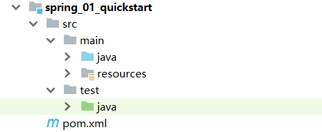
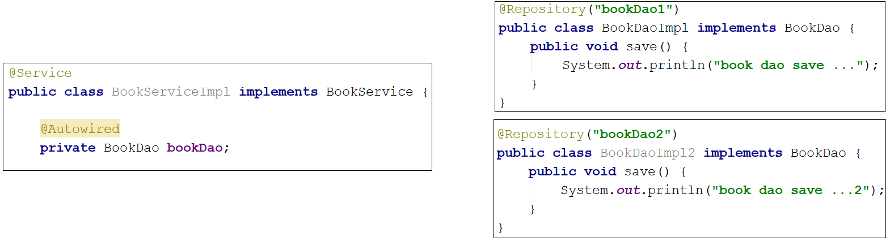
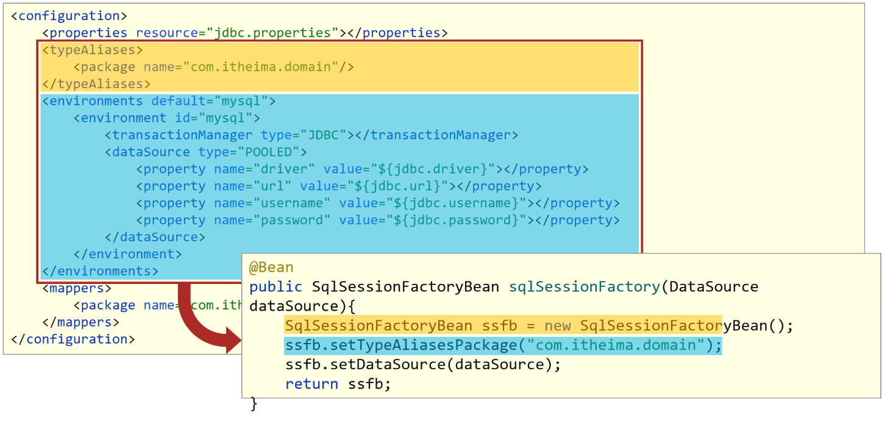
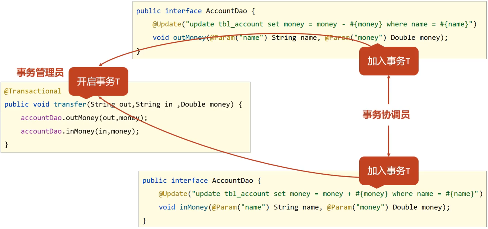

Spring 框架主要的优势是在 简化开发 和 框架整合 上，至于如何实现就是学习 Spring 框架的主要内容：
- 简化开发: Spring 框架中提供了两个大的核心技术，分别是:
- IOC
- AOP
- 事务处理
- 框架整合: Spring 在框架整合这块已经做到了极致，它可以整合市面上几乎所有主流框架，比如:
- MyBatis
- MyBatis-plus
- Struts
- Struts2
- Hibernate
- ……
参考黑马教程
# spring 介绍
基于 java web 的升级，很久以前学的来，挺多忘了，这部分不完整的整理了，参考下别人的 javaweb 内容的博客快速过下：
发现这个佬↑用了图床，有些教程里的图片可以直接白嫖！
# 学什么
简化开发: Spring 框架中提供了两个大的核心技术，分别是:
- IOC
- AOP
- 事务处理
- Spring 的简化操作都是基于这两块内容，所以这也是 Spring 学习中最为重要的两个知识点。
- 事务处理属于 Spring 中 AOP 的具体应用，可以简化项目中的事务管理，也是 Spring 技术中的一大亮点。
框架整合: Spring 在框架整合这块已经做到了极致，它可以整合市面上几乎所有主流框架，比如:
- MyBatis
- MyBatis-plus
- Struts
- Struts2
- Hibernate
- ……
这些框架中，我们目前只学习了 MyBatis，所以在 Spring 框架的学习中，主要是学习如何整合 MyBatis。
综上所述，对于 Spring 的学习，主要学习四块内容:
- IOC
- 整合 Mybatis (IOC 的具体应用)
- AOP
- 声明式事务 (AOP 的具体应用)
方法
- 学习 Spring 框架设计思想
- 对于 Spring 来说，它能迅速占领全球市场，不只是说它的某个功能比较强大，更重要是在它的
思想上。
- 对于 Spring 来说，它能迅速占领全球市场，不只是说它的某个功能比较强大，更重要是在它的
- 学习基础操作，思考操作与思想间的联系
- 掌握了 Spring 的设计思想，然后就需要通过一些基础操作来思考操作与思想之间的关联关系
- 学习案例，熟练应用操作的同时，体会思想
- 会了基础操作后，就需要通过大量案例来熟练掌握框架的具体应用，加深对设计思想的理解。
Spring 的学习主线是 IOC、AOP、声明式事务和整合 MyBais
# spring framework
- 核心层 Core Container: 核心容器，这个模块是 Spring 最核心的模块，其他的都需要依赖该模块
- AOP 层 AOP: 面向切面编程，它依赖核心层容器，目的是在不改变原有代码的前提下对其进行功能增强 Aspects: AOP 是思想，Aspects 是对 AOP 思想的具体实现
- 数据层 Data Access: 数据访问，Spring 全家桶中有对数据访问的具体实现技术 Data Integration: 数据集成，Spring 支持整合其他的数据层解决方案，比如 Mybatis Transactions: 事务，Spring 中事务管理是 Spring AOP 的一个具体实现，也是后期学习的 重点内容
- Web 层 这一层的内容将在 SpringMVC 框架具体学习
- Test 层 Spring 主要整合了 Junit 来完成单元测试和集成测试
例如：业务层需要调用数据层的方法，就需要在业务层 new 数据层的对象。如果数据层的实现类发生变化，那么业务层的代码也需要跟着改变，发生变更后，都需要进行编译 打包和重部署。总而言之就是耦合度高。
解决方案 / 核心思想: 使用对象时，在程序中不要主动使用 new 产生对象，转换为由外部提供对象
# IOC、IOC 容器、Bean、DI
# IOC（Inversion of Control）控制反转
(1) 什么是控制反转呢？
使用对象时，由主动 new 产生对象转换为由外部提供对象，此过程中对象创建控制权由程序转移到外部，此思想称为控制反转。
业务层要用数据层的类对象，以前是自己
new的现在自己不 new 了，交给
别人[外部]来创建对象别人[外部]就反转控制了数据层对象的创建权这种思想就是控制反转
别人 [外部] 指定是什么呢？继续往下学
(2) Spring 和 IOC 之间的关系是什么呢？
Spring 技术对 IOC 思想进行了实现
Spring 提供了一个容器，称为 IOC 容器，用来充当 IOC 思想中的 "外部"
IOC 思想中的
别人[外部]指的就是 Spring 的 IOC 容器
(3) IOC 容器的作用以及内部存放的是什么？
IOC 容器负责对象的创建、初始化等一系列工作，其中包含了数据层和业务层的类对象
被创建或被管理的对象在 IOC 容器中统称为 Bean
IOC 容器中放的就是一个个的 Bean 对象
(4) 当 IOC 容器中创建好 service 和 dao 对象后，程序能正确执行么？
不行，因为 service 运行需要依赖 dao 对象
IOC 容器中虽然有 service 和 dao 对象
但是 service 对象和 dao 对象没有任何关系
需要把 dao 对象交给 service, 也就是说要绑定 service 和 dao 对象之间的关系
像这种在容器中建立对象与对象之间的绑定关系就要用到 DI:
# DI（Dependency Injection）依赖注入
- 什么是依赖注入呢？
- 在容器中建立 bean 与 bean 之间的依赖关系的整个过程，称为依赖注入
- 业务层要用数据层的类对象，以前是自己
new的 - 现在自己不 new 了，靠
别人[外部其实指的就是IOC容器]来给注入进来 - 这种思想就是依赖注入
- 业务层要用数据层的类对象，以前是自己
- IOC 容器中哪些 bean 之间要建立依赖关系呢？
- 这个需要程序员根据业务需求提前建立好关系，如业务层需要依赖数据层，service 就要和 dao 建立依赖关系
IOC 和 DI 的最终目标就是: 充分解耦，具体实现靠:
- 使用 IOC 容器管理 bean（IOC)
- 在 IOC 容器内将有依赖关系的 bean 进行关系绑定（DI）
最终结果为：使用对象时不仅可以直接从 IOC 容器中获取，并且获取到的 bean 已经绑定了所有的依赖关系.
# 小结
- 什么 IOC/DI 思想？
- IOC: 控制反转，控制反转的是对象的创建权
- DI: 依赖注入，绑定对象与对象之间的依赖关系
什么是 IOC 容器？
Spring 创建了一个容器用来存放所创建的对象，这个容器就叫 IOC 容器什么是 Bean?
容器中所存放的一个个对象就叫 Bean 或 Bean 对象
# IOC/DI 配置入门案例
# 本地化
https://blog.csdn.net/qq_39653385/article/details/129483221
- 调整项目的 jdk 版本为 1.8
<properties> | |
<project.build.sourceEncoding>UTF-8</project.build.sourceEncoding> | |
<maven.compiler.source>1.8</maven.compiler.source> | |
<maven.compiler.target>1.8</maven.compiler.target> | |
</properties> |
- 调整 spring-context 为版本为 5.3.23
<dependency> | |
<groupId>org.springframework</groupId> | |
<artifactId>spring-context</artifactId> | |
<version>5.3.23</version> | |
</dependency> |
- 另一个文章找到的换版本
<build> | |
<plugins> | |
<plugin> | |
<groupId>org.apache.maven.plugins</groupId> | |
<artifactId>maven-compiler-plugin</artifactId> | |
<version>3.1</version> | |
<configuration> | |
<!-- 根据个人需要自己修改 --> | |
<source>16</source> | |
<target>16</target> | |
</configuration> | |
</plugin> | |
</plugins> | |
</build> |
记得刷新 maven，最终选择 2、3 结合起来一整段更换
<properties> | |
<project.build.sourceEncoding>UTF-8</project.build.sourceEncoding> | |
<maven.compiler.source>16</maven.compiler.source> | |
<maven.compiler.target>16</maven.compiler.target> | |
</properties> | |
<dependency> | |
<groupId>org.springframework</groupId> | |
<artifactId>spring-context</artifactId> | |
<version>5.3.23</version> | |
</dependency> |
# IOC 案例
# 思路分析
- Spring 是使用容器来管理 bean 对象的，那么管什么？
- 主要管理项目中所使用到的类对象，比如 (Service 和 Dao)
- 如何将被管理的对象告知 IOC 容器？
- 使用配置文件
- 被管理的对象交给 IOC 容器，要想从容器中获取对象，就先得思考如何获取到 IOC 容器？
- Spring 框架提供相应的接口
- IOC 容器得到后，如何从容器中获取 bean?
- 调用 Spring 框架提供对应接口中的方法
- 使用 Spring 导入哪些坐标？
- 用别人的东西，就需要在 pom.xml 添加对应的依赖
需求： 将实现类交给 Spring 管理，并从容器中获取对应的 bean 对象进行方法调用。
# 实现
- 创建 Maven 的 java 项目
 - pom.xml 添加 Spring 的依赖 jar 包
<!-- 添加 Spring 的依赖 jar 包 --> | |
<dependencies> | |
<dependency> | |
<groupId>org.springframework</groupId> | |
<artifactId>spring-context</artifactId> | |
<version>5.2.10.RELEASE</version> | |
</dependency> | |
<dependency> | |
<groupId>junit</groupId> | |
<artifactId>junit</artifactId> | |
<version>4.12</version> | |
<scope>test</scope> | |
</dependency> | |
</dependencies> |
- 创建 BookService,BookServiceImpl，BookDao 和 BookDaoImpl 四个类
public interface BookDao { | |
public void save(); | |
} | |
public class BookDaoImpl implements BookDao { | |
public void save() { | |
System.out.println("book dao save ..."); | |
} | |
} | |
public interface BookService { | |
public void save(); | |
} | |
public class BookServiceImpl implements BookService { | |
private BookDao bookDao = new BookDaoImpl(); | |
public void save() { | |
System.out.println("book service save ..."); | |
bookDao.save(); | |
} | |
} |
- resources 下添加 spring 配置文件 (applicationContext.xml)，并完成 bean 的配置
<?xml version="1.0" encoding="UTF-8"?> | |
<beans xmlns="http://www.springframework.org/schema/beans" | |
xmlns:xsi="http://www.w3.org/2001/XMLSchema-instance" | |
xsi:schemaLocation="http://www.springframework.org/schema/beans http://www.springframework.org/schema/beans/spring-beans.xsd"> | |
<!-- 上面的自动生成 --> | |
<!--bean 标签标示配置 bean | |
id 属性标示给 bean 起名字 | |
class 属性表示给 bean 定义类型 | |
--> | |
<bean id="bookDao" class="com.itheima.dao.impl.BookDaoImpl"/> | |
<bean id="bookService" class="com.itheima.service.impl.BookServiceImpl"/> | |
</beans> |
- 使用 Spring 提供的接口完成 IOC 容器的创建
// 使用 Spring 提供的接口完成 IOC 容器的创建，创建 App 类，编写 main 方法 | |
public class App { | |
public static void main(String[] args) { | |
// 1. 获取 IOC 容器 | |
ApplicationContext ctx = new ClassPathXmlApplicationContext("applicationContext.xml"); | |
// 2. 从容器中获取对象，并进行方法调用 | |
// BookDao bookDao = (BookDao) ctx.getBean("bookDao"); | |
// bookDao.save(); | |
BookService bookService = (BookService) ctx.getBean("bookService"); | |
bookService.save(); | |
} | |
} |
Spring 的 IOC 入门案例已经完成，但是在 BookServiceImpl 的类中依然存在 BookDaoImpl 对象的 new 操作，它们之间的耦合度还是比较高，这块该如何解决，就需要用到下面的 DI:依赖注入 。
# DI 案例
# 思路分析
- 要想实现依赖注入，必须要基于 IOC 管理 Bean
- DI 的入门案例要依赖于前面 IOC 的入门案例
- Service 中使用 new 形式创建的 Dao 对象是否保留？
- 需要删除掉，最终要使用 IOC 容器中的 bean 对象
- Service 中需要的 Dao 对象如何进入到 Service 中？
- 在 Service 中提供方法，让 Spring 的 IOC 容器可以通过该方法传入 bean 对象
- Service 与 Dao 间的关系如何描述？
- 使用配置文件
# 实现
- 删除业务层中使用 new 的方式创建的 dao 对象
// | |
public class BookServiceImpl implements BookService { | |
// 删除业务层中使用 new 的方式创建的 dao 对象 | |
private BookDao bookDao; | |
public void save() { | |
System.out.println("book service save ..."); | |
bookDao.save(); | |
} | |
} |
- 为属性提供 setter 方法
public class BookServiceImpl implements BookService { | |
// 删除业务层中使用 new 的方式创建的 dao 对象 | |
private BookDao bookDao; | |
public void save() { | |
System.out.println("book service save ..."); | |
bookDao.save(); | |
} | |
// 提供对应的 set 方法 | |
public void setBookDao(BookDao bookDao) { | |
this.bookDao = bookDao; | |
} | |
} |
- 在配置文件中添加依赖注入的配置 (添加 property)
<bean id="bookService" class="com.itheima.service.impl.BookServiceImpl"> | |
<!-- 配置 server 与 dao 的关系 --> | |
<!--property 标签表示配置当前 bean 的属性 | |
name 属性表示配置哪一个具体的属性 | |
ref 属性表示参照哪一个 bean | |
--> | |
<property name="bookDao" ref="bookDao"/> | |
</bean> |
注意：配置中的两个 bookDao 的含义是不一样的
- name="bookDao" 中
bookDao的作用是让 Spring 的 IOC 容器在获取到名称后，将首字母大写，前面加 set 找对应的setBookDao()方法进行对象注入 - ref="bookDao" 中
bookDao的作用是让 Spring 能在 IOC 容器中找到 id 为bookDao的 Bean 对象给bookService进行注入 - 综上所述，对应关系如下:


补充
xml 中 bean 的顺序无关，给属性赋值看的是 set 方法，与属性名无关， 与有没有属性无关，看的只是 set 方法，有 set 就是正确的
# IOC 相关内容
# bean 基础配置
对于 bean 的配置中，主要包括 bean基础配置 ， bean的别名配置 ， bean的作用范围配置 (重点), 这三部分内容：
- bean 基础配置
<bean id="" class=""/> |
- class 属性能不能写接口如
BookDao的类全名呢？
答案肯定是不行，因为接口是没办法创建对象的。
- bean 的别名配置
- 前面提过为 bean 设置 id 时，id 必须唯一，但是如果由于命名习惯而产生了分歧后，该如何解决？
使用别名
<!--name: 为 bean 指定别名，别名可以有多个，使用逗号，分号，空格进行分隔 --> | |
<bean id="bookService" name="service service4 bookEbi" class="com.itheima.service.impl.BookServiceImpl"> | |
<property name="bookDao" ref="bookDao"/> | |
</bean> | |
<!--scope：为 bean 设置作用范围，可选值为单例 singloton，非单例 prototype--> | |
<bean id="bookDao" name="dao" class="com.itheima.dao.impl.BookDaoImpl"/> |
实现类中可以用别名 (name) 实现
public class AppForName { | |
public static void main(String[] args) { | |
ApplicationContext ctx = new ClassPathXmlApplicationContext("applicationContext.xml"); | |
// 此处根据 bean 标签的 id 属性和 name 属性的任意一个值来获取 bean 对象 | |
BookService bookService = (BookService) ctx.getBean("service4"); | |
bookService.save(); | |
} | |
} |
别名 (name) 还可以用作别的 bean 中依赖注入的 ref，必须存在
- bean 的作用范围配置
<bean id="bookDao" name="dao" class="com.itheima.dao.impl.BookDaoImpl" scope="singleton"/>bean 的 scope 属性中设置

同一个 bean 获取两次，将对象打印到控制台，看打印出的地址值是否一致？
- 默认情况下，Spring 创建的 bean 对象都是单例的
即下面会得到相同的结果
public class AppForScope { | |
public static void main(String[] args) { | |
ApplicationContext ctx = new | |
ClassPathXmlApplicationContext("applicationContext.xml"); | |
BookDao bookDao1 = (BookDao) ctx.getBean("bookDao"); | |
BookDao bookDao2 = (BookDao) ctx.getBean("bookDao"); | |
System.out.println(bookDao1); | |
System.out.println(bookDao2); | |
} | |
} |
<bean id="bookDao" name="dao" class="com.itheima.dao.impl.BookDaoImpl" scope="prototype"/>
后会得到不同的结果
# 思考
为什么 bean 默认为单例？
- bean 为单例的意思是在 Spring 的 IOC 容器中只会有该类的一个对象
- bean 对象只有一个就避免了对象的频繁创建与销毁，达到了 bean 对象的复用，性能高
bean 在容器中是单例的，会不会产生线程安全问题？
- 如果对象是有状态对象，即该对象有成员变量可以用来存储数据的，
- 因为所有请求线程共用一个 bean 对象，所以会存在线程安全问题。
- 如果对象是无状态对象，即该对象没有成员变量没有进行数据存储的，
- 因方法中的局部变量在方法调用完成后会被销毁，所以不会存在线程安全问题。
哪些 bean 对象适合交给容器进行管理？
- 表现层对象
- 业务层对象
- 数据层对象
- 工具对象
哪些 bean 对象不适合交给容器进行管理？
- 封装实例的域对象（有状态），因为会引发线程安全问题，所以不适合。
# bean 实例化
- bean 是如何创建的
- 实例化 bean 的三种方式，
构造方法，静态工厂和实例工厂
# 构造方法
bean 本质上就是对象，对象在 new 的时候会使用构造方法完成，那创建 bean 也是使用构造方法完成的。
构造一个无参构造函数，且设置为私有类，能访问到，显而易见 Spring 底层用的是反射。
构造一个有参狗在函数，则程序会报错，说明 Spring 底层使用的是类的无参构造方法。
tips:为了不让外界访问到有的属性和方法的private可以用反射访问。或者编译时不知道的意思，如类的名称放在XML文件中，属性和属性值放在XML文件中，需要在运行时读取XML文件，动态获取类的信息
# 静态工厂
兼容早期老系统
<bean id="orderDao" class="com.itheima.factory.OrderDaoFactory" factory-method="getOrderDao"/> |
class : 工厂类的类全名factory-mehod : 具体工厂类中创建对象的方法名

此时从容器中获取 bean，还是在工厂类中 new 对象，意义是？
public class AppForInstanceOrder { | |
public static void main(String[] args) { | |
ApplicationContext ctx = new ClassPathXmlApplicationContext("applicationContext.xml"); | |
OrderDao orderDao = (OrderDao) ctx.getBean("orderDao"); | |
orderDao.save(); | |
} | |
} |
- 在工厂的静态方法中，我们除了 new 对象还可以做其他的一些业务操作，这些操作必不可少，如:
public class OrderDaoFactory { | |
public static OrderDao getOrderDao(){ | |
System.out.println("factory setup....");// 模拟必要的业务操作 | |
return new OrderDaoImpl(); | |
} | |
} |
原本的因为 static 不能加？
# 实例工厂
相比于静态工厂就是少了工厂类中的 static，工厂本身也需要被 new
public class UserDaoFactory { | |
public UserDao getUserDao(){ | |
return new UserDaoImpl(); | |
} | |
} | |
public class AppForInstanceUser { | |
public static void main(String[] args) { | |
// 创建实例工厂对象 | |
UserDaoFactory userDaoFactory = new UserDaoFactory(); | |
// 通过实例工厂对象创建对象 | |
UserDao userDao = userDaoFactory.getUserDao(); | |
userDao.save(); | |
} |
交给 spring 进行 bean 实例化，多了个 factory-bean 要指定：
<bean id="userFactory" class="com.itheima.factory.UserDaoFactory"/> | |
<bean id="userDao" factory-method="getUserDao" factory-bean="userFactory"/> |
- 创建实例化工厂对象，对应的是第一行配置
- 调用对象中的方法来创建 bean，对应的是第二行配置

从 IOC 容器中获取 bean 的方法

public class AppForInstanceUser { | |
public static void main(String[] args) { | |
ApplicationContext ctx = new | |
ClassPathXmlApplicationContext("applicationContext.xml"); | |
UserDao userDao = (UserDao) ctx.getBean("userDao"); | |
userDao.save(); | |
} | |
} |
实例工厂实例化比较复杂，Spring 为了简化这种配置方式就提供了一种叫 FactoryBean (泛型) 的方式来简化开发。
// 泛型补充 | |
// 泛型方法：调用时可以接收不同类型的参数。根据传递给泛型方法的参数类型，编译器适当地处理每一个方法调用。 | |
public class GenericMethodTest | |
{ | |
// 泛型方法 printArray | |
public static < E > void printArray( E[] inputArray ) | |
{ | |
// 输出数组元素 | |
for ( E element : inputArray ){ | |
System.out.printf( "%s ", element ); | |
} | |
System.out.println(); | |
} | |
public static void main( String args[] ) | |
{ | |
// 创建不同类型数组： Integer, Double 和 Character | |
Integer[] intArray = { 1, 2, 3, 4, 5 }; | |
Double[] doubleArray = { 1.1, 2.2, 3.3, 4.4 }; | |
Character[] charArray = { 'H', 'E', 'L', 'L', 'O' }; | |
System.out.println( "整型数组元素为:" ); | |
printArray( intArray ); // 传递一个整型数组 | |
System.out.println( "\n双精度型数组元素为:" ); | |
printArray( doubleArray ); // 传递一个双精度型数组 | |
System.out.println( "\n字符型数组元素为:" ); | |
printArray( charArray ); // 传递一个字符型数组 | |
} | |
} | |
// 结果 | |
整型数组元素为: | |
1 2 3 4 5 | |
双精度型数组元素为: | |
1.1 2.2 3.3 4.4 | |
字符型数组元素为: | |
H E L L O |
// 泛型类：泛型方法一样，泛型类的类型参数声明部分也包含一个或多个类型参数，参数间用逗号隔开 | |
public class Box<T> { | |
private T t; | |
public void add(T t) { | |
this.t = t; | |
} | |
public T get() { | |
return t; | |
} | |
public static void main(String[] args) { | |
Box<Integer> integerBox = new Box<Integer>(); | |
Box<String> stringBox = new Box<String>(); | |
integerBox.add(new Integer(10)); | |
stringBox.add(new String("菜鸟教程")); | |
System.out.printf("整型值为 :%d\n\n", integerBox.get()); | |
System.out.printf("字符串为 :%s\n", stringBox.get()); | |
} | |
} | |
// 结果 | |
整型值为 :10 | |
字符串为 :菜鸟教程 |
有两个方法要重写，单例模式默认 true
// 创建一个 UserDaoFactoryBean 的类，实现 FactoryBean 接口，重写接口的方法 | |
public class UserDaoFactoryBean implements FactoryBean<UserDao> { | |
// 代替原始实例工厂中创建对象的方法 | |
public UserDao getObject() throws Exception { | |
return new UserDaoImpl(); | |
} | |
// 返回所创建类的 Class 对象 | |
public Class<?> getObjectType() { | |
return UserDao.class; | |
} | |
} |
此时 bean 配置为：
<bean id="userDao" class="com.itheima.factory.UserDaoFactoryBean"/> |
# 小结
3.5 种 bean 实例方法，对应 xml 配置
<!-- 方式一：构造方法实例化 bean--> | |
<bean id="bookDao" class="com.itheima.dao.impl.BookDaoImpl"/> | |
<!-- 方式二：使用静态工厂实例化 bean--> | |
<bean id="orderDao" class="com.itheima.factory.OrderDaoFactory" factory-method="getOrderDao"/> | |
<!-- 方式三：使用实例工厂实例化 bean--> | |
<bean id="userFactory" class="com.itheima.factory.UserDaoFactory"/> | |
<bean id="userDao" factory-method="getUserDao" factory-bean="userFactory"/> | |
<!-- 方式四：使用 FactoryBean 实例化 bean--> | |
<bean id="userDao" class="com.itheima.factory.UserDaoFactoryBean"/> |
bean 是如何创建的呢？
构造方法Spring 的 IOC 实例化对象的三种方式分别是:
- 构造方法 (常用)
- 静态工厂 (了解)
- 实例工厂 (了解)
- FactoryBean (实用)
这些方式中，重点掌握 构造方法 和 FactoryBean 即可。
warning 需要注意的一点是，构造方法在类中默认会提供，但是如果重写了构造方法，默认的就会消失，在使用的过程中需要注意，如果需要重写构造方法，最好把默认的构造方法也重写下。
# bean 的生命周期
思考的是如何在 bean 的创建之后和销毁之前把我们需要添加的内容添加进去
- 环境准备：添加 BookDao、BookDaoImpl、BookService 和 BookServiceImpl 类
public interface BookDao { | |
public void save(); | |
} |
public class BookDaoImpl implements BookDao { | |
public void save() { | |
System.out.println("book dao save ..."); | |
} | |
// 表示 bean 初始化对应的操作 | |
public void init(){ | |
System.out.println("init..."); | |
} | |
// 表示 bean 销毁前对应的操作 | |
public void destory(){ | |
System.out.println("destory..."); | |
} | |
} |
public interface BookService { | |
public void save(); | |
} |
public class BookServiceImpl implements BookService{ | |
private BookDao bookDao; | |
public void setBookDao(BookDao bookDao) { | |
this.bookDao = bookDao; | |
} | |
public void save() { | |
System.out.println("book service save ..."); | |
bookDao.save(); | |
} | |
} |
<?xml version="1.0" encoding="UTF-8"?> | |
<beans xmlns="http://www.springframework.org/schema/beans" | |
xmlns:xsi="http://www.w3.org/2001/XMLSchema-instance" | |
xsi:schemaLocation="http://www.springframework.org/schema/beans http://www.springframework.org/schema/beans/spring-beans.xsd"> | |
<bean id="bookDao" class="com.itheima.dao.impl.BookDaoImpl" init-method="init" destroy-method="destory"/> | |
</beans> |
// 加载Spring的IOC容器，并从中获取对应的bean对象 | |
public class AppForLifeCycle { | |
public static void main( String[] args ) { | |
ApplicationContext ctx = new | |
ClassPathXmlApplicationContext("applicationContext.xml"); | |
BookDao bookDao = (BookDao) ctx.getBean("bookDao"); | |
bookDao.save(); | |
} | |
} |
增添了 init-method 和 destroy-method 进行 bean 周期前后的操作
warning 运行会发现 init 方法执行了，但是 destroy 方法却未执行
- Spring 的 IOC 容器是运行在 JVM 中
- 运行 main 方法后，JVM 启动，Spring 加载配置文件生成 IOC 容器，从容器获取 bean 对象，然后调方法执行
- main 方法执行完后，JVM 退出，这个时候 IOC 容器中的 bean 还没有来得及销毁就已经结束了
- 所以没有调用对应的 destroy 方法
要执行销毁操作则主动销毁，退出前 close / 注册钩子 关闭容器
- ApplicationContext 中没有 close 方法
- 需要将 ApplicationContext 更换成 ClassPathXmlApplicationContext
ClassPathXmlApplicationContext ctx = new
ClassPathXmlApplicationContext("applicationContext.xml");
// ......// 调用 ctx 的 close () 方法ctx.close();
- 运行程序，就能执行 destroy 方法的内容
- registerShutdownHook 在 ApplicationContext 中也没有
- 设置好回调函数，让 JVM 在退出之前回调此函数来关闭容器
ClassPathXmlApplicationContext ctx = new
ClassPathXmlApplicationContext("applicationContext.xml");
ctx.registerShutdownHook();
// ......// 注册了就不用 close// ctx.close();
相同点：这两种都能用来关闭容器
不同点 : close () 是在调用的时候关闭，registerShutdownHook () 是在 JVM 退出前调用关闭。
Spring 提供了两个接口来完成生命周期的控制，添加两个接口 InitializingBean ， DisposableBean 并实现接口中的两个方法 afterPropertiesSet 和 destroy
public class BookServiceImpl implements BookService, InitializingBean, DisposableBean { | |
private BookDao bookDao; | |
public void setBookDao(BookDao bookDao) { | |
this.bookDao = bookDao; | |
} | |
public void save() { | |
System.out.println("book service save ..."); | |
bookDao.save(); | |
} | |
public void destroy() throws Exception { | |
System.out.println("service destroy"); | |
} | |
public void afterPropertiesSet() throws Exception { | |
System.out.println("service init"); | |
} | |
} |

= 先生成并且后销毁 注入的依赖 =
warning
- 对于 InitializingBean 接口中的 afterPropertiesSet 方法，翻译过来为
属性设置之后。 - 对于 BookServiceImpl 来说，bookDao 是它的一个属性
- setBookDao 方法是 Spring 的 IOC 容器为其注入属性的方法
- 思考:afterPropertiesSet 和 setBookDao 谁先执行？
- 从方法名分析，猜想应该是 setBookDao 方法先执行
- 验证思路，在 setBookDao 方法中添加一句话
public void setBookDao(BookDao bookDao) { System.out.println("set ....."); this.bookDao = bookDao; } - 重新运行 AppForLifeCycle，打印结果如下:
验证的结果和我们猜想的结果是一致的，所以初始化方法会在类中属性设置之后执行。

# 小结
- 关于 Spring 中对 bean 生命周期控制提供了两种方式:
- 在配置文件中的 bean 标签中添加
init-method和destroy-method属性 - 类实现
InitializingBean与DisposableBean接口，这种方式了解下即可。
- 对于 bean 的生命周期控制在 bean 的整个生命周期中所处的位置如下:
- 初始化容器
- 1. 创建对象 (内存分配)
- 2. 执行构造方法
- 3. 执行属性注入 (set 操作)
- 4. 执行 bean 初始化方法
- 使用 bean
- 1. 执行业务操作
- 关闭 / 销毁容器
- 1. 执行 bean 销毁方法
- 关闭容器的两种方式:
- ConfigurableApplicationContext 是 ApplicationContext 的子类
- close () 方法
- registerShutdownHook () 方法
# DI 相关内容
# 依赖注入方式
# setter
对于多个引用数据注入，都要实现 set 方法和 xml 设置 ref
public class BookServiceImpl implements BookService{ | |
private BookDao bookDao; | |
private UserDao userDao; | |
public void setUserDao(UserDao userDao) { | |
this.userDao = userDao; | |
} | |
public void setBookDao(BookDao bookDao) { | |
this.bookDao = bookDao; | |
} | |
public void save() { | |
System.out.println("book service save ..."); | |
bookDao.save(); | |
userDao.save(); | |
} | |
} |
<?xml version="1.0" encoding="UTF-8"?> | |
<beans xmlns="http://www.springframework.org/schema/beans" | |
xmlns:xsi="http://www.w3.org/2001/XMLSchema-instance" | |
xsi:schemaLocation="http://www.springframework.org/schema/beans http://www.springframework.org/schema/beans/spring-beans.xsd"> | |
<bean id="bookDao" class="com.itheima.dao.impl.BookDaoImpl"/> | |
<bean id="userDao" class="com.itheima.dao.impl.UserDaoImpl"/> | |
<bean id="bookService" class="com.itheima.service.impl.BookServiceImpl"> | |
<property name="bookDao" ref="bookDao"/> | |
<property name="userDao" ref="userDao"/> | |
</bean> | |
</beans> |
对于简单数据（string、int 等）也要实现 set，但 xml 不用 ref （ref 是指向 Spring 的 IOC 容器中的另一个 bean 对象的），而是 value
public class BookDaoImpl implements BookDao { | |
private String databaseName; | |
private int connectionNum; | |
public void setConnectionNum(int connectionNum) { | |
this.connectionNum = connectionNum; | |
} | |
public void setDatabaseName(String databaseName) { | |
this.databaseName = databaseName; | |
} | |
public void save() { | |
System.out.println("book dao save ..."+databaseName+","+connectionNum); | |
} | |
} |
<?xml version="1.0" encoding="UTF-8"?> | |
<beans xmlns="http://www.springframework.org/schema/beans" | |
xmlns:xsi="http://www.w3.org/2001/XMLSchema-instance" | |
xsi:schemaLocation="http://www.springframework.org/schema/beans http://www.springframework.org/schema/beans/spring-beans.xsd"> | |
<bean id="bookDao" class="com.itheima.dao.impl.BookDaoImpl"> | |
<property name="databaseName" value="mysql"/> | |
<property name="connectionNum" value="10"/> | |
</bean> | |
<bean id="userDao" class="com.itheima.dao.impl.UserDaoImpl"/> | |
<bean id="bookService" class="com.itheima.service.impl.BookServiceImpl"> | |
<property name="bookDao" ref="bookDao"/> | |
<property name="userDao" ref="userDao"/> | |
</bean> | |
</beans> |
- 对于引用数据类型使用的是
<property name="" ref=""/> - 对于简单数据类型使用的是
<property name="" value=""/>
# 构造器（函数）注入
以 BookServiceImpl 为例，类似 set，还是要实现 this.bookDao = bookDao; 在构造函数中
public class BookServiceImpl implements BookService{ | |
private BookDao bookDao; | |
public BookServiceImpl(BookDao bookDao1) { | |
this.bookDao = bookDao; | |
} | |
// public void setBookDao(BookDao bookDao) { | |
// this.bookDao = bookDao; | |
// } | |
public void save() { | |
System.out.println("book service save ..."); | |
bookDao.save(); | |
} | |
} |
区别在于 xml 中不用 property 而是 constructor-arg 且此时 name 中的是形参名，这会导致耦合
<?xml version="1.0" encoding="UTF-8"?> | |
<beans xmlns="http://www.springframework.org/schema/beans" | |
xmlns:xsi="http://www.w3.org/2001/XMLSchema-instance" | |
xsi:schemaLocation="http://www.springframework.org/schema/beans http://www.springframework.org/schema/beans/spring-beans.xsd"> | |
<bean id="bookDao" class="com.itheima.dao.impl.BookDaoImpl"/> | |
<bean id="bookService" class="com.itheima.service.impl.BookServiceImpl"> | |
<constructor-arg name="bookDao1" ref="bookDao"/> | |
</bean> | |
</beans> |
多属性
public class BookServiceImpl implements BookService{ | |
private BookDao bookDao; | |
private UserDao userDao; | |
public BookServiceImpl(BookDao bookDao,UserDao userDao) { | |
this.bookDao = bookDao; | |
this.userDao = userDao; | |
} | |
public void save() { | |
System.out.println("book service save ..."); | |
bookDao.save(); | |
userDao.save(); | |
} | |
} |
<bean id="bookDao" class="com.itheima.dao.impl.BookDaoImpl"/> | |
<bean id="userDao" class="com.itheima.dao.impl.UserDaoImpl"/> | |
<bean id="bookService" class="com.itheima.service.impl.BookServiceImpl"> | |
<constructor-arg name="bookDao" ref="bookDao"/> | |
<constructor-arg name="userDao" ref="userDao"/> | |
</bean> |
public class BookDaoImpl implements BookDao { | |
private String databaseName; | |
private int connectionNum; | |
public BookDaoImpl(String databaseName, int connectionNum) { | |
this.databaseName = databaseName; | |
this.connectionNum = connectionNum; | |
} | |
public void save() { | |
System.out.println("book dao save ..."+databaseName+","+connectionNum); | |
} | |
} |
<?xml version="1.0" encoding="UTF-8"?> | |
<beans xmlns="http://www.springframework.org/schema/beans" | |
xmlns:xsi="http://www.w3.org/2001/XMLSchema-instance" | |
xsi:schemaLocation="http://www.springframework.org/schema/beans http://www.springframework.org/schema/beans/spring-beans.xsd"> | |
<bean id="bookDao" class="com.itheima.dao.impl.BookDaoImpl"> | |
<constructor-arg name="databaseName" value="mysql"/> | |
<constructor-arg name="connectionNum" value="666"/> | |
</bean> | |
<bean id="userDao" class="com.itheima.dao.impl.UserDaoImpl"/> | |
<bean id="bookService" class="com.itheima.service.impl.BookServiceImpl"> | |
<constructor-arg name="bookDao" ref="bookDao"/> | |
<constructor-arg name="userDao" ref="userDao"/> | |
</bean> | |
</beans> |
<contructor-arg> 的配置顺序可以任意 name 要跟着形参名变化，存在紧耦合，具体该如何解决？
- 删除 name 属性，添加 type 属性，按照类型注入
<bean id="bookDao" class="com.itheima.dao.impl.BookDaoImpl"> | |
<constructor-arg type="int" value="10"/> | |
<constructor-arg type="java.lang.String" value="mysql"/> | |
</bean> |
- 但是如果构造方法参数中有类型相同的参数，这种方式就不太好实现了
- 删除 type 属性，添加 index 属性，按照索引下标注入，下标从 0 开始
<bean id="bookDao" class="com.itheima.dao.impl.BookDaoImpl"> | |
<constructor-arg index="1" value="100"/> | |
<constructor-arg index="0" value="mysql"/> | |
</bean> |
- 这种方式可以解决参数类型重复问题
- 但是如果构造方法参数顺序发生变化后，这种方式又带来了耦合问题
如何选择呢？
- 强制依赖使用构造器进行，使用 setter 注入有概率不进行注入导致 null 对象出现
- 强制依赖指对象在创建的过程中必须要注入指定的参数（不然报错）
- 可选依赖使用 setter 注入进行，灵活性强
- 可选依赖指对象在创建过程中注入的参数可有可无
- Spring 框架倡导使用构造器，第三方框架内部大多数采用构造器注入的形式进行数据初始化，相对严谨
- 如果有必要可以两者同时使用，使用构造器注入完成强制依赖的注入，使用 setter 注入完成可选依赖的注入
- 实际开发过程中还要根据实际情况分析，如果受控对象没有提供 setter 方法就必须使用构造器注入
- 自己开发的模块推荐使用 setter 注入
# 自动装配
- IoC 容器根据 bean 所依赖的资源在容器中自动查找并注入到 bean 中的过程称为自动装配
有哪些？
- 按类型（常用）
- 按名称
- 按构造方法
- 不启用自动装配
# 按类型
set 方法必须要有，对应的 bean 也必须要有，bean 不唯一也不行
xml 中：
<!--autowire 属性：开启自动装配，通常使用按类型装配 --> | |
<bean id="bookService" class="com.itheima.service.impl.BookServiceImpl" autowire="byType"/> |
# 按名称
<!--autowire 属性：开启自动装配，通常使用按类型装配 --> | |
<bean id="bookService" class="com.itheima.service.impl.BookServiceImpl" autowire="byName"/> |
- bookDao 是 private 修饰的，外部类无法直接方法
- 外部类只能通过属性的 set 方法进行访问
- 对外部类来说，setBookDao 方法名，去掉 set 后首字母小写是其属性名
- 为什么是去掉 set 首字母小写？
- 这个规则是 set 方法生成的默认规则，set 方法的生成是把属性名首字母大写前面加 set 形成的方法名
- 所以按照名称注入，其实是和对应的 set 方法有关，但是如果按照标准起名称，属性名和 set 对应的名是一致的
- 如果按照名称去找对应的 bean 对象，找不到则注入 Null
- 当某一个类型在 IOC 容器中有多个对象，按照名称注入只找其指定名称对应的 bean 对象，不会报错
warning
- 自动装配用于引用类型依赖注入，不能对简单类型进行操作
- 使用按类型装配时（byType）必须保障容器中相同类型的 bean 唯一，推荐使用
- 使用按名称装配时（byName）必须保障容器中具有指定名称的 bean，因变量名与配置耦合，不推荐使用
- 自动装配优先级低于 setter 注入与构造器注入，同时出现时自动装配配置失效
# 集合注入
前面我们已经能完成引入数据类型和简单数据类型的注入，但是还有一种数据类型集合，集合中既可以装简单数据类型也可以装引用数据类型，对于集合，在 Spring 中该如何注入呢？
- 数组
- List
- Set
- Map
- Properties
以 BookDao、BookDaoImpl 类和其 xml 为例
public interface BookDao { | |
public void save(); | |
} |
public class BookDaoImpl implements BookDao { | |
private int[] array; | |
private List<String> list; | |
private Set<String> set; | |
private Map<String,String> map; | |
private Properties properties; | |
public void save() { | |
System.out.println("book dao save ..."); | |
System.out.println("遍历数组:" + Arrays.toString(array)); | |
System.out.println("遍历List" + list); | |
System.out.println("遍历Set" + set); | |
System.out.println("遍历Map" + map); | |
System.out.println("遍历Properties" + properties); | |
} | |
//setter.... 方法省略，自己使用工具生成 | |
} |
<bean id="bookDao" class="com.itheima.dao.impl.BookDaoImpl"> | |
<property name="array"> | |
<array> | |
<value>100</value> | |
<value>200</value> | |
<value>300</value> | |
</array> | |
</property> | |
<property name="list"> | |
<list> | |
<value>itcast</value> | |
<value>itheima</value> | |
<value>boxuegu</value> | |
<value>chuanzhihui</value> | |
</list> | |
</property> | |
<property name="set"> | |
<set> | |
<value>itcast</value> | |
<value>itheima</value> | |
<value>boxuegu</value> | |
<value>boxuegu</value> | |
</set> | |
</property> | |
<property name="map"> | |
<map> | |
<entry key="country" value="china"/> | |
<entry key="province" value="henan"/> | |
<entry key="city" value="kaifeng"/> | |
</map> | |
</property> | |
<property name="properties"> | |
<props> | |
<prop key="country">china</prop> | |
<prop key="province">henan</prop> | |
<prop key="city">kaifeng</prop> | |
</props> | |
</property> | |
</bean> |
- property 标签表示 setter 方式注入，构造方式注入 constructor-arg 标签内部也可以写
<array>、<list>、<set>、<map>、<props>标签 - List 的底层也是通过数组实现的，所以
<list>和<array>标签是可以混用 - 集合中要添加引用类型，只需要把
<value>标签改成<ref>标签，这种方式用的比较少
# IOC/DI 配置管理第三方 bean
前面所讲的知识点都是基于我们自己写的类，现在如果有需求让我们去管理第三方 jar 包中的类，该如何管理？
# 环境准备
依旧是创建 Maven 项目、添加依赖、在配置中注入依赖、运行类引入，再记录下全流程
<dependencies> | |
<dependency> | |
<groupId>org.springframework</groupId> | |
<artifactId>spring-context</artifactId> | |
<version>5.2.10.RELEASE</version> | |
</dependency> | |
</dependencies> |
resources 下添加 spring 的配置文件 applicationContext.xml
<?xml version="1.0" encoding="UTF-8"?> | |
<beans xmlns="http://www.springframework.org/schema/beans" | |
xmlns:xsi="http://www.w3.org/2001/XMLSchema-instance" | |
xsi:schemaLocation=" | |
http://www.springframework.org/schema/beans | |
http://www.springframework.org/schema/beans/spring-beans.xsd"> | |
</beans> |
编写一个运行类 App
public class App { | |
public static void main(String[] args) { | |
ApplicationContext ctx = new ClassPathXmlApplicationContext("applicationContext.xml"); | |
} | |
} |
# 思路分析
需求：使用 Spring 的 IOC 容器来管理 Druid 连接池对象
- 使用第三方的技术，需要在 pom.xml 添加依赖
- 在配置文件中将【第三方的类】制作成一个 bean，让 IOC 容器进行管理
- 数据库连接需要基础的四要素
驱动、连接、用户名和密码，【如何注入】到对应的 bean 中 - 从 IOC 容器中获取对应的 bean 对象，将其打印到控制台查看结果
- 第三方的类指的是什么？
- 如何注入数据库连接四要素？
步骤 1: 导入
druid的依赖，pom.xml 中添加
<dependency> | |
<groupId>com.alibaba</groupId> | |
<artifactId>druid</artifactId> | |
<version>1.1.16</version> | |
</dependency> |
步骤 2: 配置第三方 bean
在 applicationContext.xml 配置文件中添加 DruidDataSource 的配置
<?xml version="1.0" encoding="UTF-8"?> | |
<beans xmlns="http://www.springframework.org/schema/beans" | |
xmlns:xsi="http://www.w3.org/2001/XMLSchema-instance" | |
xsi:schemaLocation=" | |
http://www.springframework.org/schema/beans | |
http://www.springframework.org/schema/beans/spring-beans.xsd"> | |
<!-- 管理 DruidDataSource 对象 --> | |
<bean class="com.alibaba.druid.pool.DruidDataSource"> | |
<property name="driverClassName" value="com.mysql.jdbc.Driver"/> | |
<property name="url" value="jdbc:mysql://localhost:3306/spring_db"/> | |
<property name="username" value="root"/> | |
<property name="password" value="root"/> | |
</bean> | |
</beans> |
- driverClassName: 数据库驱动
- url: 数据库连接地址
- username: 数据库连接用户名
- password: 数据库连接密码
- 数据库连接的四要素要和自己使用的数据库信息一致。
tips: maven -search 插件
第三方的类指的是什么？
DruidDataSource如何注入数据库连接四要素？
setter 注入
另一个例子，管理
C3P0数据源
步骤 1: 导入C3P0的依赖
<dependency> | |
<groupId>c3p0</groupId> | |
<artifactId>c3p0</artifactId> | |
<version>0.9.1.2</version> | |
</dependency> |
对于新的技术，不知道具体的坐标该如何查找？
- 直接百度搜索
- 从 mvn 的仓库
https://mvnrepository.com/中进行搜索
步骤 2: 配置第三方 bean
<bean id="dataSource" class="com.mchange.v2.c3p0.ComboPooledDataSource"> | |
<property name="driverClass" value="com.mysql.jdbc.Driver"/> | |
<property name="jdbcUrl" value="jdbc:mysql://localhost:3306/spring_db"/> | |
<property name="user" value="root"/> | |
<property name="password" value="root"/> | |
<property name="maxPoolSize" value="1000"/> | |
</bean> |
ComboPooledDataSource 的属性是通过 setter 方式进行注入
想注入属性就需要在 ComboPooledDataSource 类或其上层类中有提供属性对应的 setter 方法
C3P0 的四个属性和 Druid 的四个属性是不一样的
数据连接池在配置属性的时候，除了可以注入数据库连接四要素外还可以配置很多其他的属性，具体都有哪些属性用到的时候再去查，一般配置基础的四个，其他都有自己的默认值
Druid 和 C3P0 在没有导入 mysql 驱动包的前提下，一个没报错一个报错，说明 Druid 在初始化的时候没有去加载驱动，而 C3P0 刚好相反
Druid 程序运行虽然没有报错，但是当调用 DruidDataSource 的 getConnection () 方法获取连接的时候，也会报找不到驱动类的错误
# 属性优化
上面的样例有些问题:
- 这两个数据源中都使用到了一些固定的常量如数据库连接四要素，把这些值写在 Spring 的配置文件中不利于后期维护
- 需要将这些值提取到一个外部的 properties 配置文件中
- Spring 框架如何从配置文件中读取属性值来配置就是接下来要解决的问题。
问题提出来后，具体该如何实现？
- 在 resources 下创建一个 jdbc.properties (文件的名称可以任意)
- 将数据库连接四要素配置到配置文件中
- 在 Spring 的配置文件中加载 properties 文件
- 使用加载到的值实现属性注入
步骤 1: 准备 properties 配置文件
resources 下创建一个 jdbc.properties 文件，并添加对应的属性键值对
jdbc.driver=com.mysql.jdbc.Driver | |
jdbc.url=jdbc:mysql://127.0.0.1:3306/spring_db | |
jdbc.username=root | |
jdbc.password=root |
步骤 2: 开启
context命名空间
在 applicationContext.xml 中开 context 命名空间
xmlns (xml name space):<spacename>="http://www.springframework.org/schema/<spacename>"
要添加第 4 行和 8、9 行。将 beans（spacename）都换成新的
<?xml version="1.0" encoding="UTF-8"?> | |
<beans xmlns="http://www.springframework.org/schema/beans" | |
xmlns:xsi="http://www.w3.org/2001/XMLSchema-instance" | |
xmlns:context="http://www.springframework.org/schema/context" | |
xsi:schemaLocation=" | |
http://www.springframework.org/schema/beans | |
http://www.springframework.org/schema/beans/spring-beans.xsd | |
http://www.springframework.org/schema/context | |
http://www.springframework.org/schema/context/spring-context.xsd"> | |
</beans> |
步骤 3: 加载 properties 配置文件 (
<sn:property-placeholder location="file"/>)
步骤 4: 完成属性注入 (${key})
<?xml version="1.0" encoding="UTF-8"?> | |
<beans xmlns="http://www.springframework.org/schema/beans" | |
xmlns:xsi="http://www.w3.org/2001/XMLSchema-instance" | |
xmlns:context="http://www.springframework.org/schema/context" | |
xsi:schemaLocation=" | |
http://www.springframework.org/schema/beans | |
http://www.springframework.org/schema/beans/spring-beans.xsd | |
http://www.springframework.org/schema/context | |
http://www.springframework.org/schema/context/spring-context.xsd"> | |
<context:property-placeholder location="jdbc.properties"/> | |
<bean id="dataSource" class="com.alibaba.druid.pool.DruidDataSource"> | |
<property name="driverClassName" value="${jdbc.driver}"/> | |
<property name="url" value="${jdbc.url}"/> | |
<property name="username" value="${jdbc.username}"/> | |
<property name="password" value="${jdbc.password}"/> | |
</bean> | |
</beans> |
作为单个属性读取注入
步骤 1: 在项目中添对应的类
BookDao 和 BookDaoImpl 类，并在 BookDaoImpl 类中添加 name 属性与 setter 方法
public interface BookDao { | |
public void save(); | |
} | |
| |
public class BookDaoImpl implements BookDao { | |
private String name; | |
| |
public void setName(String name) { | |
this.name = name; | |
} | |
| |
public void save() { | |
System.out.println("book dao save ..." + name); | |
} | |
} |
步骤 2: 完成配置文件的读取与注入
在 applicationContext.xml 添加配置， bean的配置管理 、 读取外部properties 、 依赖注入 :
<?xml version="1.0" encoding="UTF-8"?> | |
<beans xmlns="http://www.springframework.org/schema/beans" | |
xmlns:xsi="http://www.w3.org/2001/XMLSchema-instance" | |
xmlns:context="http://www.springframework.org/schema/context" | |
xsi:schemaLocation=" | |
http://www.springframework.org/schema/beans | |
http://www.springframework.org/schema/beans/spring-beans.xsd | |
http://www.springframework.org/schema/context | |
http://www.springframework.org/schema/context/spring-context.xsd"> | |
<context:property-placeholder location="jdbc.properties"/> | |
<bean id="bookDao" class="com.itheima.dao.impl.BookDaoImpl"> | |
<property name="name" value="${jdbc.driver}"/> | |
</bean> | |
</beans> |
步骤 3: 运行程序
在 App 类中，从 IOC 容器中获取 bookDao 对象，调用方法，查看值是否已经被获取到并打印控制台
public class App { | |
public static void main(String[] args) throws Exception{ | |
ApplicationContext ctx = new ClassPathXmlApplicationContext("applicationContext.xml"); | |
BookDao bookDao = (BookDao) ctx.getBean("bookDao"); | |
bookDao.save(); | |
| |
} | |
} |
warning
问题一：键值对的 key 为 username 引发的问题
<bean id="bookDao" class="com.itheima.dao.impl.BookDaoImpl"> | |
<property name="name" value="${username}"/> | |
</bean> |
运行后，在控制台打印的却不是 root666 ，而是自己电脑的用户名
- 出现问题的原因是
<context:property-placeholder/>标签会加载系统的环境变量，而且环境变量的值会被优先加载，如何查看系统的环境变量？
public static void main(String[] args) throws Exception{ | |
Map<String, String> env = System.getenv(); | |
System.out.println(env); | |
} |
解决方法
<context:property-placeholder location="jdbc.properties" system-properties-mode="NEVER"/> |
当然还有一个解决方案就是避免使用 username 作为属性的 key 。
问题二：当有多个 properties 配置文件需要被加载，该如何配置？
假如有多个配置 jdbc1.properties， jdbc2.properties
jdbc.driver=com.mysql.jdbc.Driver | |
jdbc.url=jdbc:mysql://127.0.0.1:3306/spring_db | |
jdbc.username=root | |
jdbc.password=root |
username=root666 |
对应的 xml 文件中
<!-- 方式一 --> | |
<context:property-placeholder location="jdbc.properties,jdbc2.properties" system-properties-mode="NEVER"/> | |
<!-- 方式二 --> | |
<context:property-placeholder location="*.properties" system-properties-mode="NEVER"/> | |
<!-- 方式三 --> | |
<context:property-placeholder location="classpath:*.properties" system-properties-mode="NEVER"/> | |
<!-- 方式四 --> | |
<context:property-placeholder location="classpath*:*.properties" system-properties-mode="NEVER"/> |
- 方式一：可以实现，如果配置文件多的话，每个都需要配置
- 方式二:
*.properties代表所有以 properties 结尾的文件都会被加载，可以解决方式一的问题，但是不标准 - 方式三：标准的写法，
classpath:代表的是从根路径下开始查找，但是只能查询当前项目的根路径 - 方式四：不仅可以加载当前项目还可以加载当前项目所依赖的所有项目的根路径下的 properties 配置文件
掌握：
- 如何开启
context命名空间（xmlns 相关内容更改） - 如何加载 properties 配置文件（）
<context:property-placeholder location="" system-properties-mode="NEVER"/> - 如何在 applicationContext.xml 引入 properties 配置文件中的值 (
${key})
# 核心容器
前面已经完成 bean 与依赖注入的相关知识学习，接下来学习的是 IOC 容器中的核心容器。
可以把它简单的理解为 ApplicationContext ，前面虽然已经用到过，但是并没有系统的学习，接下来咱们从以下几个问题入手来学习下容器的相关知识:
- 如何创建容器？
- 创建好容器后，如何从容器中获取 bean 对象？
- 容器类的层次结构是什么？
- BeanFactory 是什么？
与上述的环境类似包括：pom.xml、applicationContext.xml、BookDao、BookDaoImpl 为例
# 容器创建
- 类路径下的 XML 配置文件
ApplicationContext ctx = new ClassPathXmlApplicationContext("applicationContext.xml"); - 文件系统下的 XML 配置文件
ApplicationContext ctx = new FileSystemXmlApplicationContext("applicationContext.xml");
其中 2 是从项目路径下开始查找 applicationContext.xml 配置文件的，需要指定绝对路径，耦合度较高，不推荐使用ApplicationContext ctx = new FileSystemXmlApplicationContext("D:\\workspace\\spring\\spring_10_container\\src\\main\\resources\\applicationContext.xml");
# bean 的获取
- 方式一，就是目前案例中获取的方式:
BookDao bookDao = (BookDao) ctx.getBean("bookDao");
这种方式存在的问题是每次获取的时候都需要进行类型转换，有没有更简单的方式呢？
方式二：
BookDao bookDao = ctx.getBean("bookDao"，BookDao.class);
这种方式可以解决类型强转问题，但是参数又多加了一个，相对来说没有简化多少。方式三:
BookDao bookDao = ctx.getBean(BookDao.class);
这种方式就类似我们之前所学习依赖注入中的按类型注入。必须要确保 IOC 容器中该类型对应的 bean 对象只能有一个
# 容器类层次结构
- 在 IDEA 中双击
shift, 输入 BeanFactory
- 点击进入 BeanFactory 类，ctrl+h, 就能查看到如下结构的层次关系

从图中可以看出，容器类也是从无到有根据需要一层层叠加上来的，重点理解下这种设计思想。

# BeanFactory 的使用
使用 BeanFactory 来创建 IOC 容器的具体实现方式为:
public class AppForBeanFactory { | |
public static void main(String[] args) { | |
Resource resources = new ClassPathResource("applicationContext.xml"); | |
BeanFactory bf = new XmlBeanFactory(resources); | |
BookDao bookDao = bf.getBean(BookDao.class); | |
bookDao.save(); | |
} | |
} |
为了更好的看出 BeanFactory 和 ApplicationContext 之间的区别，在 BookDaoImpl 添加如下构造函数:
public class BookDaoImpl implements BookDao { | |
public BookDaoImpl() { | |
System.out.println("constructor"); | |
} | |
public void save() { | |
System.out.println("book dao save ..." ); | |
} | |
} |
如果不去获取 bean 对象，打印会发现：
- BeanFactory 是延迟加载，只有在获取 bean 对象的时候才会去创建
- ApplicationContext 是立即加载，容器加载的时候就会创建 bean 对象
- ApplicationContext 要想成为延迟加载，只需要按照如下方式进行配置
<bean id="bookDao" class="com.itheima.dao.impl.BookDaoImpl" lazy-init="true"/>
# 总结
- BeanFactory 是 IoC 容器的顶层接口，初始化 BeanFactory 对象时，加载的 bean 延迟加载
- ApplicationContext 接口是 Spring 容器的核心接口，初始化时 bean 立即加载
- ApplicationContext 接口提供基础的 bean 操作相关方法，通过其他接口扩展其功能
- ApplicationContext 接口常用初始化类
- ClassPathXmlApplicationContext (常用)
- FileSystemXmlApplicationContext

最常用的就两个属性 id 和 class。

# IOC/DI 注解开发
Spring 的 IOC/DI 对应的配置了解完了，但是使用起来相对来说还是比较复杂的，复杂的地方在配置文件
所以 Spring 到底是如何简化代码开发的呢？需要用到 Spring 的注解开发
- 2.0 版开始支持注解
- 2.5 版注解功能趋于完善
- 3.0 版支持纯注解开发
有两块内容 注解开发定义bean 和 纯注解开发
同上面一样，用 BookDao、BookDaoImpl、BookService、BookServiceImpl 四个类为例
# 注解开发定义 bean
不再 xml 中写 <bean> 依赖<bean id="bookDao" class="com.itheima.dao.impl.BookDaoImpl"/>
而是在 BookDaoImpl 类上添加 @Component 注解
@Component("bookDao") | |
public class BookDaoImpl implements BookDao { | |
public void save() { | |
System.out.println("book dao save ..." ); | |
} | |
} |
💔danger
@Component 注解不可以添加在接口上，因为接口是无法创建对象的即 BookDao 这种接口类不能用

为了让 Spring 框架能够扫描到写在类上的注解，需要在配置文件上进行包扫描
<?xml version="1.0" encoding="UTF-8"?> | |
<beans xmlns="http://www.springframework.org/schema/beans" | |
xmlns:xsi="http://www.w3.org/2001/XMLSchema-instance" | |
xsi:schemaLocation=" | |
http://www.springframework.org/schema/beans http://www.springframework.org/schema/beans/spring-beans.xsd"> | |
<context:component-scan base-package="com.itheima"/> | |
</beans> |
component-scan
- component: 组件，Spring 将管理的 bean 视作自己的一个组件
- scan: 扫描
base-package 指定 Spring 框架扫描的包路径，它会扫描指定包及其子包中的所有类上的注解 - 包路径越多 [如:com.itheima.dao.impl]，扫描的范围越小速度越快
- 包路径越少 [如:com.itheima], 扫描的范围越大速度越慢
- 一般扫描到项目的组织名称即 Maven 的 groupId 下 [如:com.itheima] 即可
在 BookServiceImpl 类上也添加 @Component 交给 Spring 框架管理
@Component | |
public class BookServiceImpl implements BookService { | |
private BookDao bookDao; | |
public void setBookDao(BookDao bookDao) { | |
this.bookDao = bookDao; | |
} | |
public void save() { | |
System.out.println("book service save ..."); | |
bookDao.save(); | |
} | |
} |
在 App 类中，从 IOC 容器中获取 BookServiceImpl 对应的 bean 对象，打印。测试为默认单例
public class App { | |
public static void main(String[] args) { | |
ApplicationContext ctx = new ClassPathXmlApplicationContext("applicationContext.xml"); | |
BookDao bookDao = (BookDao) ctx.getBean("bookDao"); | |
System.out.println(bookDao); | |
// 按类型获取 bean | |
BookService bookService = ctx.getBean(BookService.class); | |
System.out.println(bookService); | |
} | |
} |
- BookServiceImpl 类没有起名称，所以在 App 中是按照类型来获取 bean 对象
- @Component 注解如果不起名称，会有一个默认值就是
当前类名首字母小写，所以也可以按照名称获取，如
BookService bookService = (BookService)ctx.getBean("bookServiceImpl"); | |
System.out.println(bookService); |
对于 @Component 注解，还衍生出了其他三个注解 @Controller 、 @Service 、 @Repository
这三个注解和 @Component 注解的作用是一样的，为什么要衍生出这三个呢？
方便我们后期在编写类的时候能很好的区分出这个类是属于 表现层 、 业务层 还是 数据层 的类。
# 纯注解开发模式
上面已经可以使用注解来配置 bean, 但是依然有用到配置文件，在配置文件中对包进行了扫描，Spring 在 3.0 版已经支持纯注解开发
- Spring3.0 开启了纯注解开发模式，使用 Java 类替代配置文件，开启了 Spring 快速开发赛道
1：创建配置类、标识该类为配置类
2：创建一个配置类SpringConfig
3：在配置类上添加@Configuration注解
4：将其标识为一个配置类，替换applicationContext.xml
5：在配置类上添加包扫描注解@ComponentScan替换<context:component-scan base-package=""/>
6：创建一个新的运行类AppForAnnotation
@Configuration | |
@ComponentScan("com.itheima") | |
public class SpringConfig { | |
} |
public class AppForAnnotation { | |
public static void main(String[] args) { | |
ApplicationContext ctx = new AnnotationConfigApplicationContext(SpringConfig.class); | |
BookDao bookDao = (BookDao) ctx.getBean("bookDao"); | |
System.out.println(bookDao); | |
BookService bookService = ctx.getBean(BookService.class); | |
System.out.println(bookService); | |
} | |
} |
- @Configuration 注解用于设定当前类为配置类
- @ComponentScan 注解用于设定扫描路径，此注解只能添加一次，多个数据请用数组格式
@ComponentScan({com.itheima.service","com.itheima.dao"}) - 读取 Spring 核心配置文件初始化容器对象切换为读取 Java 配置类初始化容器对象
// 加载配置文件初始化容器 | |
ApplicationContext ctx = new ClassPathXmlApplicationContext("applicationContext.xml"); | |
// 加载配置类初始化容器 | |
ApplicationContext ctx = new AnnotationConfigApplicationContext(SpringConfig.class); |
# 小结
- 记住 @Component、@Controller、@Service、@Repository 这四个注解
- applicationContext.xml 中
<context:component-san/>的作用是指定扫描包路径，注解为 @ComponentScan - @Configuration 标识该类为配置类，使用类替换 applicationContext.xml 文件
- ClassPathXmlApplicationContext 是加载 XML 配置文件
- AnnotationConfigApplicationContext 是加载配置类
# 注解范围及生命周期
首先注解加载 bean 也是默认单例模式。更改的话在对应的 bean 上面添加 @Scope 注解
| 名称 | @Scope |
|---|---|
| 类型 | 类注解 |
| 位置 | 类定义上方 |
| 作用 | 设置该类创建对象的作用范围 <br/> 可用于设置创建出的 bean 是否为单例对象 |
| 属性 | value（默认）：定义 bean 作用范围，<br/> 默认值 singleton（单例），可选值 prototype（非单例） |
对于初始化和销毁对应的注解是： @PostConstruct 和 @PreDestroy
@Repository | |
public class BookDaoImpl implements BookDao { | |
public void save() { | |
System.out.println("book dao save ..."); | |
} | |
@PostConstruct // 在构造方法之后执行，替换 init-method | |
public void init() { | |
System.out.println("init ..."); | |
} | |
@PreDestroy // 在销毁方法之前执行，替换 destroy-method | |
public void destroy() { | |
System.out.println("destroy ..."); | |
} | |
} | |
public class App { | |
public static void main(String[] args) { | |
AnnotationConfigApplicationContext ctx = new AnnotationConfigApplicationContext(SpringConfig.class); | |
BookDao bookDao1 = ctx.getBean(BookDao.class); | |
BookDao bookDao2 = ctx.getBean(BookDao.class); | |
System.out.println(bookDao1); | |
System.out.println(bookDao2); | |
ctx.close(); //`destroy` 只有在容器关闭的时候，才会执行 | |
} | |
} |
注意:@PostConstruct 和 @PreDestroy 注解如果找不到，需要导入下面的 jar 包
<dependency> | |
<groupId>javax.annotation</groupId> | |
<artifactId>javax.annotation-api</artifactId> | |
<version>1.3.2</version> | |
</dependency> |
找不到的原因是，从 JDK9 以后 jdk 中的 javax.annotation 包被移除了，这两个注解刚好就在这个包中。

# 注解依赖注入
虽然已经通过注解实现了 bean 的控制，但如下
@Service | |
public class BookServiceImpl implements BookService { | |
private BookDao bookDao; | |
public void setBookDao(BookDao bookDao) { | |
this.bookDao = bookDao; | |
} | |
public void save() { | |
System.out.println("book service save ..."); | |
bookDao.save(); | |
} | |
} | |
public class App { | |
public static void main(String[] args) { | |
AnnotationConfigApplicationContext ctx = new AnnotationConfigApplicationContext(SpringConfig.class); | |
BookService bookService = ctx.getBean(BookService.class); | |
bookService.save(); | |
} | |
} |
运行 app 类则会报错 Cannot invoke "com.itheima.dao.BookDao.save()" because "this.bookDao" is null
这是因为还没尽兴依赖注入，虽然 bookService 创建没问题，要调用 bookDao 时则会报错。删除 get 注入方式，通过注解 @Autowired 即可
@Service | |
public class BookServiceImpl implements BookService { | |
@Autowired | |
private BookDao bookDao; | |
public void save() { | |
System.out.println("book service save ..."); | |
bookDao.save(); | |
} | |
} |
- @Autowired 可以写在属性上，也可也写在 setter 方法上，最简单的处理方式是
写在属性上并将setter方法删除掉 - 为什么 setter 方法可以删除呢？
- 自动装配基于反射设计创建对象并通过暴力反射为私有属性进行设值
- 普通反射只能获取 public 修饰的内容
- 暴力反射除了获取 public 修饰的内容还可以获取 private 修改的内容
- 所以此处无需提供 setter 方法
warning 但如果对应 BookDao 接口如果有多个实现类，如 public class BookDaoImpl2 implements BookDao {...} ，则又会报错
此时，按照类型注入就无法区分到底注入哪个对象，解决方案: 按照名称注入
给两个 dao 类起别名
@Repository("bookDao") | |
public class BookDaoImpl implements BookDao { | |
public void save() { | |
System.out.println("book dao save ..." ); | |
} | |
} | |
@Repository("bookDao2") | |
public class BookDaoImpl2 implements BookDao { | |
public void save() { | |
System.out.println("book dao save ...2" ); | |
} | |
} |
此时就可以注入成功，但是得思考个问题:
- @Autowired 是按照类型注入的，给 BookDao 的两个实现起了名称，它还是有两个 bean 对象，为什么不报错？
- @Autowired 默认按照类型自动装配，如果 IOC 容器中同类的 Bean 找到多个，就按照变量名和 Bean 的名称匹配。因为变量名叫
bookDao而容器中也有一个booDao，所以可以成功注入
相对的，此时按照类型会找到多个 bean 对象，此时会按照 bookDao 名称去找，因为 IOC 容器只有名称叫 bookDao1 和 bookDao2 , 所以找不到，会报 NoUniqueBeanDefinitionException

当根据类型在容器中找到多个 bean, 注入参数的属性名又和容器中 bean 的名称不一致，这个时候该如何解决，就需要使用到 @Qualifier 来指定注入哪个名称的 bean 对象。
@Service | |
public class BookServiceImpl implements BookService { | |
@Autowired | |
@Qualifier("bookDao1") | |
private BookDao bookDao; | |
public void save() { | |
System.out.println("book service save ..."); | |
bookDao.save(); | |
} | |
} |
@Qualifier 注解后的值就是需要注入的 bean 的名称。
注意:@Qualifier 不能独立使用，必须和 @Autowired 一起使用
简单数据的注入
使用 @Value ，如果类型不对应则会报错
@Repository("bookDao") | |
public class BookDaoImpl implements BookDao { | |
@Value("itheima") | |
private String name; | |
public void save() { | |
System.out.println("book dao save ..." + name); | |
} | |
} |
为了统一管理，可以使用到之前的 properties配置文件 ，可见属性优化，区别在于要改为注解读取 properties 配置文件
resource 下准备 properties 文件，如：jdbc.properties
使用注解加载 properties 配置文件（在配置类上添加@PropertySource注解）
使用 @Value 读取配置文件中的内容（${name}）
// 假设在 jdbc.properties 下有个属性 name=zy | |
@Configuration | |
@ComponentScan("com.itheima") | |
@PropertySource("jdbc.properties") | |
public class SpringConfig { | |
} | |
@Repository("bookDao") | |
public class BookDaoImpl implements BookDao { | |
@Value("${name}") | |
private String name; | |
public void save() { | |
System.out.println("book dao save ..." + name); | |
} | |
} | |
// 结果：book dao save zy |
- 如果读取的 properties 配置文件有多个，可以使用
@PropertySource的属性来指定多个@PropertySource({"jdbc.properties","xxx.properties"}) @PropertySource注解属性中不支持使用通配符*, 运行会报错@PropertySource({"*.properties"})@PropertySource注解属性中可以把classpath:加上，代表从当前项目的根路径找文件@PropertySource({"classpath:jdbc.properties"})
# 小结
@Autowired 自动装配依赖@Qualifier 依赖类有多个 bean 时，指定 id 注入@Value 简单数据注入的注解@PropertySource 注入 properties 文件（管理简单数据 / 特定数据：数据库账号密码等），搭配 @Value 和 ${<name>} 使用
# IOC/DI 注解开发管理第三方 bean
前面定义 bean 的时候都是在自己开发的类上面写个注解就完成了，但如果是第三方的类，这些类都是在 jar 包中，我们没有办法在类上面添加注解，这个时候该怎么办？
- 我们就需要有一种更加灵活的方式来定义 bean, 这种方式不能在原始代码上面书写注解，一样能定义 bean, 这就用到了一个全新的注解 ==@Bean==。
以导入 druid 为例，可见 IOC/DI 配置管理第三方 bean 中在 xml 中设置 bean，现在通过注解在 config 类中配置
<dependency> | |
<groupId>com.alibaba</groupId> | |
<artifactId>druid</artifactId> | |
<version>1.1.16</version> | |
</dependency> |
在配置类中添加一个方法，该方法的返回值就是要创建的 Bean 对象类型，在方法上添加 @Bean 注解
@Configuration | |
public class SpringConfig { | |
@Bean | |
public DataSource dataSource(){ | |
DruidDataSource ds = new DruidDataSource(); | |
ds.setDriverClassName("com.mysql.jdbc.Driver"); | |
ds.setUrl("jdbc:mysql://localhost:3306/spring_db"); | |
ds.setUsername("root"); | |
ds.setPassword("root"); | |
return ds; | |
} | |
} |
注意：不能使用 DataSource ds = new DruidDataSource() ，因为 DataSource 接口中没有对应的 setter 方法来设置属性。
此时就可以从 IOC 容器中获取对象并打印：
public class App { | |
public static void main(String[] args) { | |
AnnotationConfigApplicationContext ctx = new AnnotationConfigApplicationContext(SpringConfig.class); | |
DataSource dataSource = ctx.getBean(DataSource.class); | |
System.out.println(dataSource); | |
} | |
} |
如果有多个 bean 要被 Spring 管理，直接在配置类中多些几个方法，方法上添加 @Bean 注解即可
# 多配置处理
如果把所有的第三方 bean 都配置到 Spring 的配置类 SpringConfig 中，虽然可以，但是不利于代码阅读和分类管理，所有我们就想能不能按照类别将这些 bean 配置到不同的配置类中？
对于数据源的 bean, 我们新建一个 JdbcConfig 配置类，并把数据源配置到该类下
public class JdbcConfig { | |
@Bean | |
public DataSource dataSource(){ | |
DruidDataSource ds = new DruidDataSource(); | |
ds.setDriverClassName("com.mysql.jdbc.Driver"); | |
ds.setUrl("jdbc:mysql://localhost:3306/spring_db"); | |
ds.setUsername("root"); | |
ds.setPassword("root"); | |
return ds; | |
} | |
} |
这个配置类如何能被 Spring 配置类加载到，并创建 DataSource 对象在 IOC 容器中？
- 包扫描
- @Import 引入
对于包扫描：
步骤 1: 在 Spring 的配置类上添加包扫描
步骤 2: 在 JdbcConfig 上添加配置注解
在 dao 层同级的 config 目录下创建配置类 SpringConfig 为例，在跟配置类 SpringConfig 指定 @ComponentScan() 扫描对应的目录。JdbcConfig 依然要声明 @Configuration
@Configuration | |
@ComponentScan("com.itheima.config") | |
public class SpringConfig { | |
} | |
@Configuration | |
public class JdbcConfig { | |
@Bean | |
public DataSource dataSource(){ | |
DruidDataSource ds = new DruidDataSource(); | |
ds.setDriverClassName("com.mysql.jdbc.Driver"); | |
ds.setUrl("jdbc:mysql://localhost:3306/spring_db"); | |
ds.setUsername("root"); | |
ds.setPassword("root"); | |
return ds; | |
} | |
} |
使用 @Import 引入：
这种方案可以不用加 @Configuration 注解，但是必须在 Spring 配置类上使用 @Import 注解手动引入需要加载的配置类
步骤 1: 去除 JdbcConfig 类上的注解
步骤 2: 在 Spring 配置类中引入
@Configuration | |
//@ComponentScan("com.itheima.config") | |
@Import({JdbcConfig.class}) | |
public class SpringConfig { | |
} | |
public class JdbcConfig { | |
@Bean | |
public DataSource dataSource(){ | |
DruidDataSource ds = new DruidDataSource(); | |
ds.setDriverClassName("com.mysql.jdbc.Driver"); | |
ds.setUrl("jdbc:mysql://localhost:3306/spring_db"); | |
ds.setUsername("root"); | |
ds.setPassword("root"); | |
return ds; | |
} | |
} |
- 扫描注解可以移除
- @Import 参数需要的是一个数组，可以引入多个配置类
- @Import 注解在配置类中只能写一次，多个则会报错
# 第三方的依赖注入
- 对于简单数据，类似注解依赖注入中的 properties 处理
- 对于类，在 SpringConfig 中扫描该类，纳入 Spring 管理即可
简单数据：
@Configuration | |
@ComponentScan("com.itheima") | |
@PropertySource("classpath:jdbc.properties") | |
@Import({JdbcConfig.class}) | |
public class SpringConfig { | |
} | |
public class JdbcConfig { | |
//1. 定义一个方法获得要管理的对象 | |
@Value("${jdbc.driver}") | |
private String driver; | |
@Value("${jdbc.url}") | |
private String url; | |
@Value("${jdbc.username}") | |
private String userName; | |
@Value("${jdbc.password}") | |
private String password; | |
//2. 添加 @Bean，表示当前方法的返回值是一个 bean | |
//@Bean 修饰的方法，形参根据类型自动装配 | |
@Bean | |
public DataSource dataSource(BookDao bookDao){ | |
System.out.println(bookDao); | |
DruidDataSource ds = new DruidDataSource(); | |
ds.setDriverClassName(driver); | |
ds.setUrl(url); | |
ds.setUsername(userName); | |
ds.setPassword(password); | |
return ds; | |
} | |
} | |
public class App { | |
public static void main(String[] args) { | |
AnnotationConfigApplicationContext ctx = new AnnotationConfigApplicationContext(SpringConfig.class); | |
DataSource dataSource = ctx.getBean(DataSource.class); | |
System.out.println(dataSource); | |
} | |
} |
jdbc.properties 文件放在 main 目录下的 resources 资源文件夹，可以右键 make directory as ：Sources root 就会自动找到了
类注入
假设在构建 DataSource 对象的时候，需要用到 BookDao 对象，该如何把 BookDao 对象注入进方法内让其使用呢？
步骤 1: 在 SpringConfig 中扫描 BookDao
步骤 2: 在 JdbcConfig 类的方法上添加参数
@Configuration | |
@ComponentScan("com.itheima.dao") | |
@Import({JdbcConfig.class}) | |
public class SpringConfig { | |
} | |
@Bean | |
public DataSource dataSource(BookDao bookDao){ | |
System.out.println(bookDao); | |
DruidDataSource ds = new DruidDataSource(); | |
ds.setDriverClassName(driver); | |
ds.setUrl(url); | |
ds.setUsername(userName); | |
ds.setPassword(password); | |
return ds; | |
} |
引用类型注入只需要为 bean 定义方法设置形参即可，容器会根据类型自动装配对象
# 注解开发总结
前文包括了 XML 配置和注解的开发实现，两者之间的差异见图
# Spring 整合
Spring 有一个容器，叫做 IoC 容器，里面保存 bean。在进行企业级开发的时候，其实除了将自己写的类让 Spring 管理之外，还有一部分重要的工作就是使用第三方的技术。前面已经讲了如何管理第三方 bean 了，下面结合 IoC 和 DI，整合 2 个常用技术 Mybatis , Junit ，进一步加深对 Spring 的使用理解。
# mybatis
# 独立开发流程
步骤 1: 准备数据库表
Mybatis 是来操作数据库表，所以先创建一个数据库及表
create database spring_db character set utf8; | |
use spring_db; | |
create table tbl_account( | |
id int primary key auto_increment, | |
name varchar(35), | |
money double | |
); |
小小的复习下 mysql
打开服务、进入终端 mysql -u root -p / DG、
步骤 2: 创建项目导入 jar 包
项目的 pom.xml 添加相关依赖
<dependencies> | |
<dependency> | |
<groupId>org.springframework</groupId> | |
<artifactId>spring-context</artifactId> | |
<version>5.2.10.RELEASE</version> | |
</dependency> | |
<dependency> | |
<groupId>com.alibaba</groupId> | |
<artifactId>druid</artifactId> | |
<version>1.1.16</version> | |
</dependency> | |
<dependency> | |
<groupId>org.mybatis</groupId> | |
<artifactId>mybatis</artifactId> | |
<version>3.5.6</version> | |
</dependency> | |
<dependency> | |
<groupId>mysql</groupId> | |
<artifactId>mysql-connector-java</artifactId> | |
<version>5.1.47</version> | |
</dependency> | |
</dependencies> |
步骤 3: 根据表创建模型类
public class Account implements Serializable { | |
private Integer id; | |
private String name; | |
private Double money; | |
public Integer getId() { | |
return id; | |
} | |
public void setId(Integer id) { | |
this.id = id; | |
} | |
public String getName() { | |
return name; | |
} | |
public void setName(String name) { | |
this.name = name; | |
} | |
public Double getMoney() { | |
return money; | |
} | |
public void setMoney(Double money) { | |
this.money = money; | |
} | |
@Override | |
public String toString() { | |
return "Account{" + | |
"id=" + id + | |
", name='" + name + '\'' + | |
", money=" + money + | |
'}'; | |
} | |
} |
步骤 4: 创建 Dao 接口
public interface AccountDao { | |
@Insert("insert into tbl_account(name,money)values(#{name},#{money})") | |
void save(Account account); | |
@Delete("delete from tbl_account where id = #{id} ") | |
void delete(Integer id); | |
@Update("update tbl_account set name = #{name} , money = #{money} where id = #{id} ") | |
void update(Account account); | |
@Select("select * from tbl_account") | |
List<Account> findAll(); | |
@Select("select * from tbl_account where id = #{id} ") | |
Account findById(Integer id); | |
} |
步骤 5: 创建 Service 接口和实现类
public interface AccountService { | |
void save(Account account); | |
void delete(Integer id); | |
void update(Account account); | |
List<Account> findAll(); | |
Account findById(Integer id); | |
} | |
@Service | |
public class AccountServiceImpl implements AccountService { | |
@Autowired | |
private AccountDao accountDao; | |
public void save(Account account) { | |
accountDao.save(account); | |
} | |
public void update(Account account){ | |
accountDao.update(account); | |
} | |
public void delete(Integer id) { | |
accountDao.delete(id); | |
} | |
public Account findById(Integer id) { | |
return accountDao.findById(id); | |
} | |
public List<Account> findAll() { | |
return accountDao.findAll(); | |
} | |
} |
步骤 6: 添加 jdbc.properties 文件
resources 目录下添加，用于配置数据库连接四要素
jdbc.driver=com.mysql.jdbc.Driver | |
jdbc.url=jdbc:mysql://localhost:3306/spring_db?useSSL=false | |
jdbc.username=root | |
# 根据自身 mysql 环境账号密码设置 | |
jdbc.password=123456 |
useSSL: 关闭 MySQL 的 SSL 连接
步骤 7: 添加 Mybatis 核心配置文件
<?xml version="1.0" encoding="UTF-8"?> | |
<!DOCTYPE configuration | |
PUBLIC "-//mybatis.org//DTD Config 3.0//EN" | |
"http://mybatis.org/dtd/mybatis-3-config.dtd"> | |
<configuration> | |
<!-- 读取外部 properties 配置文件 --> | |
<properties resource="jdbc.properties"></properties> | |
<!-- 别名扫描的包路径 --> | |
<typeAliases> | |
<package name="com.itheima.domain"/> | |
</typeAliases> | |
<!-- 数据源 --> | |
<environments default="mysql"> | |
<environment id="mysql"> | |
<transactionManager type="JDBC"></transactionManager> | |
<dataSource type="POOLED"> | |
<property name="driver" value="${jdbc.driver}"></property> | |
<property name="url" value="${jdbc.url}"></property> | |
<property name="username" value="${jdbc.username}"></property> | |
<property name="password" value="${jdbc.password}"></property> | |
</dataSource> | |
</environment> | |
</environments> | |
<!-- 映射文件扫描包路径 --> | |
<mappers> | |
<package name="com.itheima.dao"></package> | |
</mappers> | |
</configuration> |
步骤 8: 编写应用程序
public class App { | |
public static void main(String[] args) throws IOException { | |
// 1. 创建 SqlSessionFactoryBuilder 对象 | |
SqlSessionFactoryBuilder sqlSessionFactoryBuilder = new SqlSessionFactoryBuilder(); | |
// 2. 加载 SqlMapConfig.xml 配置文件 | |
InputStream inputStream = Resources.getResourceAsStream("SqlMapConfig.xml.bak"); | |
// 3. 创建 SqlSessionFactory 对象 | |
SqlSessionFactory sqlSessionFactory = sqlSessionFactoryBuilder.build(inputStream); | |
// 4. 获取 SqlSession | |
SqlSession sqlSession = sqlSessionFactory.openSession(); | |
// 5. 执行 SqlSession 对象执行查询，获取结果 User | |
AccountDao accountDao = sqlSession.getMapper(AccountDao.class); | |
Account ac = accountDao.findById(1); | |
System.out.println(ac); | |
// 6. 释放资源 | |
sqlSession.close(); | |
} | |
} |
# 用 Spring 的流程
Mybatis 的基础环境我们已经准备好了，接下来就得分析下在上述的内容中，哪些对象可以交给 Spring 来管理？
- Mybatis 程序核心对象分析

- 从图中可以获取到，真正需要交给 Spring 管理的是 SqlSessionFactory，SqlSession 是由 SqlSessionFactory 造好的
- 整合 Mybatis，就是将 Mybatis 用到的内容交给 Spring 管理，分析下配置文件

- 第一行读取外部 properties 配置文件，Spring 有提供具体的解决方案
@PropertySource, 需要交给 Spring - 第二行起别名包扫描，为 SqlSessionFactory 服务的，需要交给 Spring
- 第三行主要用于做连接池，Spring 之前我们已经整合了 Druid 连接池，这块也需要交给 Spring
- 前面三行一起都是为了创建 SqlSession 对象用的，那么用 Spring 管理 SqlSession 对象吗？回忆下 SqlSession 是由 SqlSessionFactory 创建出来的，所以只需要将 SqlSessionFactory 交给 Spring 管理即可。
- 第四行是 Mapper 接口和映射文件 [如果使用注解就没有该映射文件]，这个是在获取到 SqlSession 以后执行具体操作的时候用，所以它和 SqlSessionFactory 创建的时机都不在同一个时间，可能需要单独管理。


因此大体需要做两件事：
- Spring 要管理 MyBatis 中的 SqlSessionFactory
- Spring 要管理 Mapper 接口的扫描
步骤 1: 项目中导入整合需要的 jar 包
<dependency> | |
<!--Spring 操作数据库需要该 jar 包 --> | |
<groupId>org.springframework</groupId> | |
<artifactId>spring-jdbc</artifactId> | |
<version>5.2.10.RELEASE</version> | |
</dependency> | |
<dependency> | |
<!-- | |
Spring 与 Mybatis 整合的 jar 包 | |
这个 jar 包 mybatis 在前面，是 Mybatis 提供的 | |
--> | |
<groupId>org.mybatis</groupId> | |
<artifactId>mybatis-spring</artifactId> | |
<version>1.3.0</version> | |
</dependency> |
步骤 2: 创建 Spring 的主配置类
// 配置类注解 | |
@Configuration | |
// 包扫描，主要扫描的是项目中的 AccountServiceImpl 类 | |
@ComponentScan("com.itheima") | |
public class SpringConfig { | |
} |
步骤 3: 创建数据源的配置类
在配置类中完成数据源的创建
public class JdbcConfig { | |
@Value("${jdbc.driver}") | |
private String driver; | |
@Value("${jdbc.url}") | |
private String url; | |
@Value("${jdbc.username}") | |
private String userName; | |
@Value("${jdbc.password}") | |
private String password; | |
@Bean | |
public DataSource dataSource(){ | |
DruidDataSource ds = new DruidDataSource(); | |
ds.setDriverClassName(driver); | |
ds.setUrl(url); | |
ds.setUsername(userName); | |
ds.setPassword(password); | |
return ds; | |
} | |
} |
步骤 4: 主配置类中读 properties 并引入数据源配置类
@Configuration | |
@ComponentScan("com.itheima") | |
@PropertySource("classpath:jdbc.properties") | |
@Import(JdbcConfig.class) // 或者在 JdbcConfig 上添加 @Configuration | |
public class SpringConfig { | |
} |
步骤 5: 创建 Mybatis 配置类并配置 SqlSessionFactory
public class MybatisConfig { | |
// 定义 bean，SqlSessionFactoryBean，用于产生 SqlSessionFactory 对象 | |
@Bean | |
public SqlSessionFactoryBean sqlSessionFactory(DataSource dataSource){ | |
SqlSessionFactoryBean ssfb = new SqlSessionFactoryBean(); | |
// 设置模型类的别名扫描 | |
ssfb.setTypeAliasesPackage("com.itheima.domain"); | |
// 设置数据源 | |
ssfb.setDataSource(dataSource); | |
return ssfb; | |
} | |
// 定义 bean，返回 MapperScannerConfigurer 对象 | |
@Bean | |
public MapperScannerConfigurer mapperScannerConfigurer(){ | |
MapperScannerConfigurer msc = new MapperScannerConfigurer(); | |
msc.setBasePackage("com.itheima.dao"); | |
return msc; | |
} | |
} |
说明：
使用 SqlSessionFactoryBean 封装 SqlSessionFactory 需要的环境信息
SqlSessionFactoryBean 是前面我们讲解 FactoryBean 的一个子类，在该类中将 SqlSessionFactory 的创建进行了封装，简化 bean 的创建，我们只需要将其需要的内容设置即可。
DataSource 读取配置文件生成 bean，然后注入进来的
方法中有一个参数为 dataSource，当前 Spring 容器中已经创建了 Druid 数据源，类型刚好是 DataSource 类型，此时在初始化 SqlSessionFactoryBean 这个对象的时候，发现需要使用 DataSource 对象，而容器中刚好有这么一个对象，就自动加载了 DruidDataSource 对象。
使用 MapperScannerConfigurer 加载 Dao 接口，创建代理对象保存到 IOC 容器中

这个 MapperScannerConfigurer 对象也是 MyBatis 提供的专用于整合的 jar 包中的类，用来处理原始配置文件中的 mappers 相关配置，加载数据层的 Mapper 接口类
MapperScannerConfigurer 有一个核心属性 basePackage，就是用来设置所扫描的包路径

步骤 6: 主配置类中引入 Mybatis 配置类
@Configuration | |
@ComponentScan("com.itheima") | |
@PropertySource("classpath:jdbc.properties") | |
@Import({JdbcConfig.class,MybatisConfig.class}) | |
public class SpringConfig { | |
} |
步骤 7: 编写运行类
在运行类中，从 IOC 容器中获取 Service 对象，调用方法获取结果
public class App2 { | |
public static void main(String[] args) { | |
ApplicationContext ctx = new AnnotationConfigApplicationContext(SpringConfig.class); | |
AccountService accountService = ctx.getBean(AccountService.class); | |
Account ac = accountService.findById(1); | |
System.out.println(ac); | |
} | |
} |
支持 Spring 与 Mybatis 的整合就已经完成了，其中主要用到的两个类分别是:
- SqlSessionFactoryBean (
ssfb.setTypeAliasesPackage("com.itheima.domain");)
- MapperScannerConfigurer (
msc.setBasePackage("com.itheima.dao");)
就是动态的管理这两个，模型类，和与数据库对应属性的对象类。
至于 Mapper 接口怎么注入 Spring 容器，相关的扩展学习：原理详解
# Junit
代码和其他环境跟 mybatis 一样
JUnit 是一个编写可重复测试的简单框架。它是单元测试框架的 xUnit 架构的一个实例
步骤 1: 引入依赖
pom.xml
<dependency> | |
<groupId>junit</groupId> | |
<artifactId>junit</artifactId> | |
<version>4.12</version> | |
<scope>test</scope> | |
</dependency> | |
<dependency> | |
<groupId>org.springframework</groupId> | |
<artifactId>spring-test</artifactId> | |
<version>5.2.10.RELEASE</version> | |
</dependency> |
步骤 2: 编写测试类
在 test\java 下创建一个 AccountServiceTest，这个名字任意，配置要测试的 bean 为其属性，测试相应方法即可
// 设置类运行器 | |
@RunWith(SpringJUnit4ClassRunner.class) | |
// 设置 Spring 环境对应的配置类 | |
@ContextConfiguration(classes = {SpringConfiguration.class}) // 加载配置类 | |
//@ContextConfiguration (locations={"classpath:applicationContext.xml"})// 加载配置文件 | |
public class AccountServiceTest { | |
// 支持自动装配注入 bean | |
@Autowired | |
private AccountService accountService; | |
@Test | |
public void testFindById(){ | |
System.out.println(accountService.findById(1)); | |
} | |
@Test | |
public void testFindAll(){ | |
System.out.println(accountService.findAll()); | |
} | |
} |
核心就是：
设置类运行器：
@RunWith(SpringJUnit4ClassRunner.class)加载测试配置
- 如果测试的是注解配置类，则使用
@ContextConfiguration(classes = 配置类.class) - 如果测试的是配置文件，则使用
@ContextConfiguration(locations={配置文件名,...})
- 如果测试的是注解配置类，则使用
Junit 运行后是基于 Spring 环境运行的，所以 Spring 提供了一个专用的类运行器，这个务必要设置，这个类运行器就在 Spring 的测试专用包中提供的，导入的坐标就是这个东西
SpringJUnit4ClassRunner上面两个配置都是固定格式，当需要测试哪个 bean 时，使用自动装配加载对应的对象，下面的工作就和以前做 Junit 单元测试完全一样了
# AOP
Spring 有两个核心的概念，一个是 IOC/DI ，一个是 AOP
- AOP (Aspect Oriented Programming) 面向切面编程，一种编程范式，指导开发者如何组织程序结构。
- OOP (Object Oriented Programming) 面向对象编程
- 作用: 在不惊动原始设计的基础上为其进行功能增强，前面咱们有技术就可以实现这样的功能即代理模式。
# 核心概念
为了能更好的理解 AOP 的相关概念，我们准备了一个环境，整个环境的内容我们暂时可以不用关注，最主要的类为: BookDaoImpl
@Repository | |
public class BookDaoImpl implements BookDao { | |
public void save() { | |
// 记录程序当前执行执行（开始时间） | |
Long startTime = System.currentTimeMillis(); | |
// 业务执行万次 | |
for (int i = 0;i<10000;i++) { | |
System.out.println("book dao save ..."); | |
} | |
// 记录程序当前执行时间（结束时间） | |
Long endTime = System.currentTimeMillis(); | |
// 计算时间差 | |
Long totalTime = endTime-startTime; | |
// 输出信息 | |
System.out.println("执行万次消耗时间：" + totalTime + "ms"); | |
} | |
public void update(){ | |
System.out.println("book dao update ..."); | |
} | |
public void delete(){ | |
System.out.println("book dao delete ..."); | |
} | |
public void select(){ | |
System.out.println("book dao select ..."); | |
} | |
} |
当在 App 类中从容器中获取 bookDao 对象后，分别执行其 save , delete , update 和 select 方法后会有如下的打印结果:
- 对于计算万次执行消耗的时间只有 save 方法有，为什么 delete 和 update 方法也会有呢？
- delete 和 update 方法有，那什么 select 方法为什么又没有呢？
这个案例中其实就使用了 Spring 的 AOP，在不惊动 (改动) 原有设计 (代码) 的前提下，想给谁添加功能就给谁添加。这个也就是 Spring 的理念：
- 无入侵式 / 无侵入式

- 前面一直在强调，Spring 的 AOP 是对一个类的方法在不进行任何修改的前提下实现增强。对于上面的案例中 BookServiceImpl 中有
save,update,delete和select方法，这些方法我们给起了一个名字叫连接点 (所有方法) - 在 BookServiceImpl 的四个方法中，update 和 delete 只有打印没有计算万次执行消耗时间，但是在运行的时候已经有该功能，那也就是说 update 和 delete 方法都已经被增强，所以对于需要增强的方法我们给起了一个名字叫切入点（需要增强的方法）
- 执行 BookServiceImpl 的 update 和 delete 方法的时候都被添加了一个计算万次执行消耗时间的功能，将这个功能抽取到一个方法中，换句话说就是存放共性功能的方法，我们给起了个名字叫通知
- 通知是要增强的内容，会有多个，切入点是需要被增强的方法，也会有多个，那哪个切入点需要添加哪个通知，就需要提前将它们之间的关系描述清楚，那么对于通知和切入点之间的关系描述，我们给起了个名字叫切面
- 通知是一个方法，方法不能独立存在需要被写在一个类中，这个类我们也给起了个名字叫通知类
至此 AOP 中的核心概念就已经介绍完了，总结下:
- 连接点 (JoinPoint)：程序执行过程中的任意位置，粒度为执行方法、抛出异常、设置变量等
- 在 SpringAOP 中，理解为方法的执行
- 切入点 (Pointcut): 匹配连接点的式子
- 在 SpringAOP 中，一个切入点可以描述一个具体方法，也可也匹配多个方法
- 一个具体的方法：如 com.itheima.dao 包下的 BookDao 接口中的无形参无返回值的 save 方法
- 匹配多个方法：所有的 save 方法，所有的 get 开头的方法，所有以 Dao 结尾的接口中的任意方法，所有带有一个参数的方法
- 连接点范围要比切入点范围大，是切入点的方法也一定是连接点，但是是连接点的方法就不一定要被增强，所以可能不是切入点。
- 在 SpringAOP 中，一个切入点可以描述一个具体方法，也可也匹配多个方法
- 通知 (Advice): 在切入点处执行的操作，也就是共性功能
- 在 SpringAOP 中，功能最终以方法的形式呈现
- 通知类：定义通知的类
- 切面 (Aspect): 描述通知与切入点的对应关系。
提问
- 什么是 AOP?
- AOP 的作用是什么？
- AOP 中核心概念分别指的是什么？
# AOP 入门案例
# 需求分析
案例设定：测算接口执行效率，但是这个案例稍微复杂了点，我们对其进行简化。
简化设定：在方法执行前输出当前系统时间。
对于 SpringAOP 的开发有两种方式，XML 和 注解，我们使用哪个呢？
因为现在注解使用的比较多，所以本次课程就采用注解完成 AOP 的开发。
总结需求为：使用 SpringAOP 的注解方式完成在方法执行的前打印出当前系统时间。
- 导入坐标 (pom.xml)
- 制作连接点 (原始操作，Dao 接口与实现类)
- 制作共性功能 (通知类与通知)
- 定义切入点
- 绑定切入点与通知关系 (切面)
# 环境准备
创建一个 Maven 项目
pom.xml 添加 Spring 依赖 (context 会关联 aop 的包默认导入)
<dependencies><dependency><groupId>org.springframework</groupId>
<artifactId>spring-context</artifactId>
<version>5.2.10.RELEASE</version>
</dependency></dependencies>添加 BookDao 和 BookDaoImpl 类
public interface BookDao {
public void save();
public void update();
}@Repositorypublic class BookDaoImpl implements BookDao {
public void save() {
System.out.println(System.currentTimeMillis());
System.out.println("book dao save ...");
}public void update(){
System.out.println("book dao update ...");
}}创建 Spring 的配置类
@Configuration@ComponentScan("com.itheima")
public class SpringConfig {
}编写 App 运行类
public class App {
public static void main(String[] args) {
ApplicationContext ctx = new AnnotationConfigApplicationContext(SpringConfig.class);
BookDao bookDao = ctx.getBean(BookDao.class);
bookDao.save();
}}
# AOP 实现步骤
步骤 1: 添加依赖
pom.xml
<dependency> | |
<groupId>org.aspectj</groupId> | |
<artifactId>aspectjweaver</artifactId> | |
<version>1.9.4</version> | |
</dependency> |
- 因为
spring-context中已经导入了spring-aop, 所以不需要再单独导入spring-aop - 导入 AspectJ 的 jar 包，AspectJ 是 AOP 思想的一个具体实现，Spring 有自己的 AOP 实现，但是相比于 AspectJ 来说比较麻烦，所以我们直接采用 Spring 整合 ApsectJ 的方式进行 AOP 开发。
步骤 2: 定义接口与实现类
环境准备的时候，BookDaoImpl已经准备好，不需要做任何修改
步骤 3: 定义通知类和通知
通知就是将共性功能抽取出来后形成的方法，共性功能指的就是当前系统时间的打印。
public class MyAdvice { | |
public void method(){ | |
System.out.println(System.currentTimeMillis()); | |
} | |
} |
类名和方法名没有要求，可以任意。
步骤 4: 定义切入点
BookDaoImpl 中有两个方法，分别是 save 和 update，我们要增强的是 update 方法，该如何定义呢？ @Pointcut
public class MyAdvice { | |
@Pointcut("execution(void com.itheima.dao.BookDao.update())") | |
private void pt(){} | |
public void method(){ | |
System.out.println(System.currentTimeMillis()); | |
} | |
} |
说明:
- 切入点定义依托一个不具有实际意义的方法进行，即无参数、无返回值、方法体无实际逻辑。
- execution 及后面编写的内容，后面会有章节专门去学习。
步骤 5: 制作切面
切面是用来描述通知和切入点之间的关系，如何进行关系的绑定？ @Before 等切面注解
public class MyAdvice { | |
@Pointcut("execution(void com.itheima.dao.BookDao.update())") | |
private void pt(){} | |
@Before("pt()") | |
public void method(){ | |
System.out.println(System.currentTimeMillis()); | |
} | |
} |
绑定切入点与通知关系，并指定通知添加到原始连接点的具体执行位置
说明:@Before 翻译过来是之前，也就是说通知会在切入点方法执行之前执行，除此之前还有其他四种类型，后面会讲。
步骤 6: 将通知类配给容器
@Component并标识其为切面类@Aspect
@Component | |
@Aspect | |
public class MyAdvice { | |
@Pointcut("execution(void com.itheima.dao.BookDao.update())") | |
private void pt(){} | |
@Before("pt()") | |
public void method(){ | |
System.out.println(System.currentTimeMillis()); | |
} | |
} |
步骤 7: 开启注解格式 AOP 功能
@EnableAspectJAutoProxy
告诉 spring，有用注解开发的 AOP
@Configuration | |
@ComponentScan("com.itheima") | |
@EnableAspectJAutoProxy | |
public class SpringConfig { | |
} |
步骤 8: 运行程序
public class App { | |
public static void main(String[] args) { | |
ApplicationContext ctx = new AnnotationConfigApplicationContext(SpringConfig.class); | |
BookDao bookDao = ctx.getBean(BookDao.class); | |
bookDao.update(); | |
} | |
} |
看到在执行 update 方法之前打印了系统时间戳，说明对原始方法进行了增强，AOP 编程成功。
核心流程 就是告知 spring 用了 AOP 注解 @EnableAspectJAutoProxy ，定义通知类和通知（ @Pointcut 添加切入点（哪些要增强），通知上 @Before 等切面注解（什么时候切入）），最后这个通知类配给容器 @Component 并标识其为切面类 @Aspect
# AOP 工作流程
流程 1:Spring 容器启动
- 容器启动就需要去加载 bean, 哪些类需要被加载呢？
- 需要被增强的类，如：BookServiceImpl
- 通知类，如：MyAdvice
- 注意此时 bean 对象还没有创建成功
流程 2: 读取所有切面配置中的切入点

- 上面这个例子中有两个切入点的配置，但是第一个
ptx()并没有被使用，所以不会被读取。
流程 3: 初始化 bean，
判定 bean 对应的类中的方法是否匹配到任意切入点
- 注意第 1 步在容器启动的时候，bean 对象还没有被创建成功。
- 要被实例化 bean 对象的类中的方法和切入点进行匹配

- 匹配失败，创建原始对象，如
UserDao- 匹配失败说明不需要增强，直接调用原始对象的方法即可。
- 匹配成功，创建原始对象（目标对象）的代理对象，如:
BookDao- 匹配成功说明需要对其进行增强
- 对哪个类做增强，这个类对应的对象就叫做目标对象
- 因为要对目标对象进行功能增强，而采用的技术是动态代理，所以会为其创建一个代理对象
- 最终运行的是代理对象的方法，在该方法中会对原始方法进行功能增强
- 匹配失败，创建原始对象，如

流程 4: 获取 bean 执行方法
- 获取的 bean 是原始对象时，调用方法并执行，完成操作
- 获取的 bean 是代理对象时，根据代理对象的运行模式运行原始方法与增强的内容，完成操作
代理成功后输出对象不变，但 class 会变成代理System.out.println(bookDao); com.itheima.dao.impl.BookDaoImpl@279fedbdSystem.out.println(bookDao.getClass());
- 如果目标对象中的方法会被增强，那么容器中将存入的是目标对象的代理对象（
class com.sun.proxy.$Proxy19） - 如果目标对象中的方法不被增强，那么容器中将存入的是目标对象本身 (
class com.itheima.dao.impl.BookDaoImpl)
直接打印对象走的是对象的 toString 方法，不管是不是代理对象打印的结果都是一样的，原因是内部对 toString 方法进行了重写
提问
- 请说出 AOP 的工作流程
- AOP 的核心概念？
答案
- 目标对象、连接点、切入点
- 通知类、通知
- 切面
- 代理
- SpringAOP 的本质或者可以说底层实现是？
答案
- 通过代理模式。
# AOP 配置管理
# AOP 切入点表达式
对于 AOP 中切入点表达式，有三部分，分别是 语法格式 、 通配符 和 书写技巧 。
# 语法格式
execution(public User com.itheima.service.UserService.findById(int)) 为例：
- execution：动作关键字，描述切入点的行为动作，例如 execution 表示执行到指定切入点
- public: 访问修饰符，还可以是 public，private 等，可以省略
- User：返回值，写返回值类型
- com.itheima.service：包名，多级包使用点连接
- UserService: 类 / 接口名称
- findById：方法名
- int: 参数，直接写参数的类型，多个类型用逗号隔开
- 异常名：方法定义中抛出指定异常，可以省略
# 通配符
*: 单个独立的任意符号，可以独立出现，也可以作为前缀或者后缀的匹配符出现
execution（public * com.itheima.*.UserService.find*(*))
匹配 com.itheima 包下的任意包中的 UserService 类或接口中所有 find 开头的带有一个参数的方法..：多个连续的任意符号，可以独立出现，常用于简化包名与参数的书写
execution（public User com..UserService.findById (..))
匹配 com 包下的任意包中的 UserService 类或接口中所有名称为 findById 的方法+：专用于匹配子类类型
execution (* *..*Service+.*(..))
这个使用率较低，描述子类的，咱们做 JavaEE 开发，继承机会就一次，使用都很慎重，所以很少用它。*Service+，表示所有以 Service 结尾的接口的子类。
样例：
execution(void com.itheima.dao.BookDao.update()) | |
匹配接口，能匹配到 | |
execution(void com.itheima.dao.impl.BookDaoImpl.update()) | |
匹配实现类，能匹配到 | |
execution(* com.itheima.dao.impl.BookDaoImpl.update()) | |
返回值任意，能匹配到 | |
execution(* com.itheima.dao.impl.BookDaoImpl.update(*)) | |
返回值任意，但是update方法必须要有一个参数，无法匹配，要想匹配需要在update接口和实现类添加参数 | |
execution(void com.*.*.*.*.update()) | |
返回值为void,com包下的任意包三层包下的任意类的update方法，匹配到的是实现类，能匹配 | |
execution(void com.*.*.*.update()) | |
返回值为void,com包下的任意两层包下的任意类的update方法，匹配到的是接口，能匹配 | |
execution(void *..update()) | |
返回值为void，方法名是update的任意包下的任意类，能匹配 | |
execution(* *..*(..)) | |
匹配项目中任意类的任意方法，能匹配，但是不建议使用这种方式，影响范围广 | |
execution(* *..u*(..)) | |
匹配项目中任意包任意类下只要以u开头的方法，update方法能满足，能匹配 | |
execution(* *..*e(..)) | |
匹配项目中任意包任意类下只要以e结尾的方法，update和save方法能满足，能匹配 | |
execution(void com..*()) | |
返回值为void，com包下的任意包任意类任意方法，能匹配，*代表的是方法 | |
execution(* com.itheima.*.*Service.find*(..)) | |
将项目中所有业务层方法的以find开头的方法匹配 | |
execution(* com.itheima.*.*Service.save*(..)) | |
将项目中所有业务层方法的以save开头的方法匹配 |
后面两种更符合我们平常切入点表达式的编写规则
# 书写技巧
对于切入点表达式的编写其实是很灵活的，那么在编写的时候，有没有什么好的技巧让我们用用:
- 所有代码按照标准规范开发，否则以下技巧全部失效
- 描述切入点通 常描述接口，而不描述实现类，如果描述到实现类，就出现紧耦合了
- 访问控制修饰符针对接口开发均采用 public 描述（可省略访问控制修饰符描述）
- 返回值类型对于增删改类使用精准类型加速匹配，对于查询类使用 * 通配快速描述
- 包名 书写 尽量不使用.. 匹配，效率过低，常用 * 做单个包描述匹配，或精准匹配
- 接口名 / 类名书写名称与模块相关的采用 * 匹配，例如 UserService 书写成 * Service，绑定业务层接口名
- 方法名 书写以 动词 进行 精准匹配，名词采用_匹配，例如 getById 书写成 getBy_,selectAll 书写成 selectAll
- 参数规则较为复杂，根据业务方法灵活调整
- 通常 不使用异常 作为 匹配 规则
# AOP 通知类型
之前提过的 @Before("pt()") 所代表的含义是将 通知 添加到 切入点 方法执行的前面。
包括它还有：
- 前置通知
@Before - 后置通知
@After - 环绕通知 (重点)
@Around - 返回后通知 (了解)
@AfterReturning - 抛出异常后通知 (了解)
@AfterThrowing

前置、后置看图很好理解，讲下环绕
@Component | |
@Aspect | |
public class MyAdvice { | |
@Pointcut("execution(void com.itheima.dao.BookDao.update())") | |
private void pt(){} | |
@Around("pt()") | |
public void around(){ | |
System.out.println("around before advice ..."); | |
System.out.println("around after advice ..."); | |
} | |
} |
运行后通知的内容打印出来，但是原始方法的内容却没有被执行
因为环绕通知需要在原始方法的前后进行增强，所以环绕通知就必须要能对原始操作进行调用，具体如何实现？
@Component | |
@Aspect | |
public class MyAdvice { | |
@Pointcut("execution(void com.itheima.dao.BookDao.update())") | |
private void pt(){} | |
@Around("pt()") | |
public void around(ProceedingJoinPoint pjp) throws Throwable{ | |
System.out.println("around before advice ..."); | |
// 表示对原始操作的调用 | |
pjp.proceed(); | |
System.out.println("around after advice ..."); | |
} | |
} |
pjp.proceed(); 会强制要求抛异常 throws Throwable 。 ProceedingJoinPoint pjp 会代替接入点
对于切入点有返回值的
@Around("pt2()") | |
public Object aroundSelect(ProceedingJoinPoint pjp) throws Throwable { | |
System.out.println("around before advice ..."); | |
// 表示对原始操作的调用 | |
Object ret = pjp.proceed(); | |
System.out.println("around after advice ..."); | |
return ret; | |
} |
必须要返回，否则报错。且能在截取出来的这个方法里进一步操作，但是需要返回值具体类型能匹配，比如要返回值 + 100，还得将 ret 强转 int 匹配。
环绕通知注意事项
- 环绕通知必须依赖形参 ProceedingJoinPoint 才能实现对原始方法的调用，进而实现原始方法调用前后同时添加通知
- 通知中如果未使用 ProceedingJoinPoint 对原始方法进行调用将跳过原始方法的执行
- 对原始方法的调用可以不接收返回值，通知方法设置成 void 即可，如果接收返回值，最好设定为 Object 类型
- 原始方法的返回值如果是 void 类型，通知方法的返回值类型可以设置成 void, 也可以设置成 Object
- 由于无法预知原始方法运行后是否会抛出异常，因此环绕通知方法必须要处理 Throwable 异常
@AfterReturning 是需要在原始方法 select 正常执行后才会被执行，如果 select() 方法执行的过程中出现了异常，那么返回后通知是不会被执行。后置通知是不管原始方法有没有抛出异常都会被执行。
@AfterThrowing 是需要原始方法抛出异常，可以在 select() 方法中添加一行代码 int i = 1/0 即可。如果没有抛异常，异常后通知将不会被执行。

# 业务层接口执行效率
任务：使用环绕通知，原始方法如果只执行一次，时间太快，两个时间差可能为 0，所以我们要执行万次来计算时间差。
# 环境准备
创建一个 Maven 项目
pom.xml 添加 Spring 依赖
<dependencies><dependency><groupId>org.springframework</groupId>
<artifactId>spring-context</artifactId>
<version>5.2.10.RELEASE</version>
</dependency><dependency><groupId>org.springframework</groupId>
<artifactId>spring-jdbc</artifactId>
<version>5.2.10.RELEASE</version>
</dependency><dependency><groupId>org.springframework</groupId>
<artifactId>spring-test</artifactId>
<version>5.2.10.RELEASE</version>
</dependency><dependency><groupId>org.aspectj</groupId>
<artifactId>aspectjweaver</artifactId>
<version>1.9.4</version>
</dependency><dependency><groupId>mysql</groupId>
<artifactId>mysql-connector-java</artifactId>
<version>5.1.47</version>
</dependency><dependency><groupId>com.alibaba</groupId>
<artifactId>druid</artifactId>
<version>1.1.16</version>
</dependency><dependency><groupId>org.mybatis</groupId>
<artifactId>mybatis</artifactId>
<version>3.5.6</version>
</dependency><dependency><groupId>org.mybatis</groupId>
<artifactId>mybatis-spring</artifactId>
<version>1.3.0</version>
</dependency><dependency><groupId>junit</groupId>
<artifactId>junit</artifactId>
<version>4.12</version>
<scope>test</scope>
</dependency></dependencies>添加 AccountService、AccountServiceImpl、AccountDao 与 Account 类
public interface AccountService {
void save(Account account);
void delete(Integer id);
void update(Account account);
List<Account> findAll();
Account findById(Integer id);
}@Servicepublic class AccountServiceImpl implements AccountService {
@Autowiredprivate AccountDao accountDao;
public void save(Account account) {
accountDao.save(account);
}public void update(Account account){
accountDao.update(account);
}public void delete(Integer id) {
accountDao.delete(id);
}public Account findById(Integer id) {
return accountDao.findById(id);
}public List<Account> findAll() {
return accountDao.findAll();
}}public interface AccountDao {
@Insert("insert into tbl_account(name,money)values(#{name},#{money})")
void save(Account account);
@Delete("delete from tbl_account where id = #{id} ")
void delete(Integer id);
@Update("update tbl_account set name = #{name} , money = #{money} where id = #{id} ")
void update(Account account);
@Select("select * from tbl_account")
List<Account> findAll();
@Select("select * from tbl_account where id = #{id} ")
Account findById(Integer id);
}public class Account implements Serializable {
private Integer id;
private String name;
private Double money;
//setter..getter..toString 方法省略}resources 下提供一个 jdbc.properties
jdbc.driver=com.mysql.jdbc.Driver | |
jdbc.url=jdbc:mysql://localhost:3306/spring_db?useSSL=false | |
jdbc.username=root | |
jdbc.password=123456 |
创建相关配置类
//Spring 配置类：SpringConfig@Configuration@ComponentScan("com.itheima")
@PropertySource("classpath:jdbc.properties")
@Import({JdbcConfig.class,MybatisConfig.class})
public class SpringConfig {
}//JdbcConfig 配置类public class JdbcConfig {
@Value("${jdbc.driver}")
private String driver;
@Value("${jdbc.url}")
private String url;
@Value("${jdbc.username}")
private String userName;
@Value("${jdbc.password}")
private String password;
@Beanpublic DataSource dataSource(){
DruidDataSource ds = new DruidDataSource();
ds.setDriverClassName(driver);
ds.setUrl(url);
ds.setUsername(userName);
ds.setPassword(password);
return ds;
}}//MybatisConfig 配置类public class MybatisConfig {
@Beanpublic SqlSessionFactoryBean sqlSessionFactory(DataSource dataSource){
SqlSessionFactoryBean ssfb = new SqlSessionFactoryBean();
ssfb.setTypeAliasesPackage("com.itheima.domain");
ssfb.setDataSource(dataSource);
return ssfb;
}@Beanpublic MapperScannerConfigurer mapperScannerConfigurer(){
MapperScannerConfigurer msc = new MapperScannerConfigurer();
msc.setBasePackage("com.itheima.dao");
return msc;
}}编写 Spring 整合 Junit 的测试类
@RunWith(SpringJUnit4ClassRunner.class)
@ContextConfiguration(classes = SpringConfig.class)
public class AccountServiceTestCase {
@Autowiredprivate AccountService accountService;
@Testpublic void testFindById(){
Account ac = accountService.findById(2);
}@Testpublic void testFindAll(){
List<Account> all = accountService.findAll();
}}
# 功能实现
步骤 1: 开启 SpringAOP 的注解功能
在 Spring 的主配置文件 SpringConfig 类中添加注解
@EnableAspectJAutoProxy |
步骤 2: 创建 AOP 的通知类
- 该类要被 Spring 管理，需要添加 @Component
- 要标识该类是一个 AOP 的切面类，需要添加 @Aspect
- 配置切入点表达式，需要添加一个方法，并添加 @Pointcut
@Component | |
@Aspect | |
public class ProjectAdvice { | |
// 配置业务层的所有方法 | |
@Pointcut("execution(* com.itheima.service.*Service.*(..))") | |
private void servicePt(){} | |
public void runSpeed(){ | |
} | |
} |
步骤 3: 添加环绕通知
在 runSpeed () 方法上添加 @Around
@Component | |
@Aspect | |
public class ProjectAdvice { | |
// 配置业务层的所有方法 | |
@Pointcut("execution(* com.itheima.service.*Service.*(..))") | |
private void servicePt(){} | |
//@Around ("ProjectAdvice.servicePt ()") 可以简写为下面的方式 | |
@Around("servicePt()") | |
public Object runSpeed(ProceedingJoinPoint pjp){ | |
Object ret = pjp.proceed(); | |
return ret; | |
} | |
} |
注意: 目前并没有做任何增强
步骤 4: 完成核心业务，记录万次执行的时间
@Component | |
@Aspect | |
public class ProjectAdvice { | |
// 配置业务层的所有方法 | |
@Pointcut("execution(* com.itheima.service.*Service.*(..))") | |
private void servicePt(){} | |
//@Around ("ProjectAdvice.servicePt ()") 可以简写为下面的方式 | |
@Around("servicePt()") | |
public void runSpeed(ProceedingJoinPoint pjp){ | |
long start = System.currentTimeMillis(); | |
for (int i = 0; i < 10000; i++) { | |
pjp.proceed(); | |
} | |
long end = System.currentTimeMillis(); | |
System.out.println("业务层接口万次执行时间: "+(end-start)+"ms"); | |
} | |
} |
步骤 6: 程序优化
目前程序所面临的问题是，多个方法一起执行测试的时候，控制台都打印的是:业务层接口万次执行时间:xxxms
我们没有办法区分到底是哪个接口的哪个方法执行的具体时间，具体如何优化？
@Component | |
@Aspect | |
public class ProjectAdvice { | |
// 配置业务层的所有方法 | |
@Pointcut("execution(* com.itheima.service.*Service.*(..))") | |
private void servicePt(){} | |
//@Around ("ProjectAdvice.servicePt ()") 可以简写为下面的方式 | |
@Around("servicePt()") | |
public void runSpeed(ProceedingJoinPoint pjp){ | |
// 获取执行签名信息 | |
Signature signature = pjp.getSignature(); | |
// 通过签名获取执行操作名称 (接口名) | |
String className = signature.getDeclaringTypeName(); | |
// 通过签名获取执行操作名称 (方法名) | |
String methodName = signature.getName(); | |
long start = System.currentTimeMillis(); | |
for (int i = 0; i < 10000; i++) { | |
pjp.proceed(); | |
} | |
long end = System.currentTimeMillis(); | |
System.out.println("万次执行："+ className+"."+methodName+"---->" +(end-start) + "ms"); | |
} | |
} |

tips: 当前测试的接口执行效率仅仅是一个理论值，并不是一次完整的执行过程
# AOP 通知获取数据
目前我们写 AOP 仅仅是在原始方法前后追加一些操作，接下来我们要说说 AOP 中数据相关的内容，我们将从 获取参数 、 获取返回值 和 获取异常 三个方面来研究切入点的相关信息。
前面我们介绍通知类型的时候总共讲了五种，那么对于这五种类型都会有参数，返回值和异常吗？
获取切入点方法的参数，所有的通知类型都可以获取参数
- JoinPoint：适用于前置、后置、返回后、抛出异常后通知
- ProceedingJoinPoint：适用于环绕通知
获取切入点方法返回值，前置和抛出异常后通知是没有返回值，后置通知可有可无，所以不做研究
- 返回后通知
- 环绕通知
获取切入点方法运行异常信息，前置和返回后通知是不会有，后置通知可有可无，所以不做研究
- 抛出异常后通知
- 环绕通知
# 环境准备
创建一个 Maven 项目
pom.xml 添加 Spring 依赖
<dependencies><dependency><groupId>org.springframework</groupId>
<artifactId>spring-context</artifactId>
<version>5.2.10.RELEASE</version>
</dependency><dependency><groupId>org.aspectj</groupId>
<artifactId>aspectjweaver</artifactId>
<version>1.9.4</version>
</dependency></dependencies>添加 BookDao 和 BookDaoImpl 类
public interface BookDao {
public String findName(int id);
}@Repositorypublic class BookDaoImpl implements BookDao {
public String findName(int id) {
System.out.println("id:"+id);
return "itcast";
}}创建 Spring 的配置类
@Configuration@ComponentScan("com.itheima")
@EnableAspectJAutoProxypublic class SpringConfig {
}编写通知类
@Component@Aspectpublic class MyAdvice {
@Pointcut("execution(* com.itheima.dao.BookDao.findName(..))")
private void pt(){}
@Before("pt()")
public void before() {
System.out.println("before advice ..." );
}@After("pt()")
public void after() {
System.out.println("after advice ...");
}@Around("pt()")
public Object around() throws Throwable{
Object ret = pjp.proceed();
return ret;
}@AfterReturning("pt()")
public void afterReturning() {
System.out.println("afterReturning advice ...");
}@AfterThrowing("pt()")
public void afterThrowing() {
System.out.println("afterThrowing advice ...");
}}编写 App 运行类
public class App {
public static void main(String[] args) {
ApplicationContext ctx = new AnnotationConfigApplicationContext(SpringConfig.class);
BookDao bookDao = ctx.getBean(BookDao.class);
String name = bookDao.findName(100);
System.out.println(name);
}}
# 获取参数
# 非环绕通知获取方式
在方法上添加 JoinPoint, 通过 JoinPoint 来获取参数
@Component | |
@Aspect | |
public class MyAdvice { | |
@Pointcut("execution(* com.itheima.dao.BookDao.findName(..))") | |
private void pt(){} | |
| |
@Before("pt()") | |
public void before(JoinPoint jp) | |
Object[] args = jp.getArgs(); | |
System.out.println(Arrays.toString(args)); | |
System.out.println("before advice ..." ); | |
} | |
//... 其他的略 | |
} |
运行 App 类，可以获取如下内容，说明参数 100 已经被获取
方法的参数只有一个，为什么获取的是一个数组?
- 因为参数的个数是不固定的，所以使用数组更通配些
使用 JoinPoint 的方式获取参数适用于 前置 、 后置 、 返回后 、 抛出异常后 通知
# 环绕通知获取方式
环绕通知使用的是 ProceedingJoinPoint，因为 ProceedingJoinPoint 是 JoinPoint 类的子类，所以对于 ProceedingJoinPoint 类中应该也会有对应的 getArgs() 方法
@Component | |
@Aspect | |
public class MyAdvice { | |
@Pointcut("execution(* com.itheima.dao.BookDao.findName(..))") | |
private void pt(){} | |
@Around("pt()") | |
public Object around(ProceedingJoinPoint pjp)throws Throwable { | |
Object[] args = pjp.getArgs(); | |
System.out.println(Arrays.toString(args)); | |
Object ret = pjp.proceed(); | |
return ret; | |
} | |
// 其他的略 | |
} |
tips: pjp.proceed () 方法是有两个构造方法，分别是:
- 调用无参数的 proceed，当原始方法有参数，会在调用的过程中自动传入参数
- 所以调用这两个方法的任意一个都可以完成功能
- 但是当需要修改原始方法的参数时，就只能采用带有参数的方法，如下
@Component | |
@Aspect | |
public class MyAdvice { | |
@Pointcut("execution(* com.itheima.dao.BookDao.findName(..))") | |
private void pt(){} | |
@Around("pt()") | |
public Object around(ProceedingJoinPoint pjp) throws Throwable{ | |
Object[] args = pjp.getArgs(); | |
System.out.println(Arrays.toString(args)); | |
args[0] = 666; | |
Object ret = pjp.proceed(args); | |
return ret; | |
} | |
// 其他的略 | |
} |
有了这个特性后，我们就可以在环绕通知中对原始方法的参数进行拦截过滤，避免由于参数的问题导致程序无法正确运行，保证代码的健壮性
# 获取返回值
对于返回值，只有返回后 AfterReturing 和环绕 Around 这两个通知类型可以获取，具体如何获取？
# 环绕通知获取返回值
@Component | |
@Aspect | |
public class MyAdvice { | |
@Pointcut("execution(* com.itheima.dao.BookDao.findName(..))") | |
private void pt(){} | |
@Around("pt()") | |
public Object around(ProceedingJoinPoint pjp) throws Throwable{ | |
Object[] args = pjp.getArgs(); | |
System.out.println(Arrays.toString(args)); | |
args[0] = 666; | |
Object ret = pjp.proceed(args); | |
return ret; | |
} | |
// 其他的略 | |
} |
上述代码中， ret 就是方法的返回值，我们是可以直接获取，不但可以获取，如果需要还可以进行修改。
# 返回后通知获取返回值
@Component | |
@Aspect | |
public class MyAdvice { | |
@Pointcut("execution(* com.itheima.dao.BookDao.findName(..))") | |
private void pt(){} | |
@AfterReturning(value = "pt()",returning = "ret") | |
public void afterReturning(Object ret) { | |
System.out.println("afterReturning advice ..."+ret); | |
} | |
// 其他的略 | |
} |

其中参数类型可以写成 String 等具体的，但是为了能匹配更多的参数类型，建议写成 Object 类型
# 获取异常
对于获取抛出的异常，只有抛出异常后 AfterThrowing 和环绕 Around 这两个通知类型可以获取，具体如何获取？
# 环绕通知获取异常
这块比较简单，以前我们是抛出异常，现在只需要将异常捕获，就可以获取到原始方法的异常信息了
@Component | |
@Aspect | |
public class MyAdvice { | |
@Pointcut("execution(* com.itheima.dao.BookDao.findName(..))") | |
private void pt(){} | |
@Around("pt()") | |
public Object around(ProceedingJoinPoint pjp){ | |
Object[] args = pjp.getArgs(); | |
System.out.println(Arrays.toString(args)); | |
args[0] = 666; | |
Object ret = null; | |
try{ | |
ret = pjp.proceed(args); | |
}catch(Throwable throwable){ | |
t.printStackTrace(); | |
} | |
return ret; | |
} | |
// 其他的略 | |
} |
在 catch 方法中就可以获取到异常，至于获取到异常以后该如何处理，这个就和你的业务需求有关了。
# 抛出异常后通知获取异常
@Component | |
@Aspect | |
public class MyAdvice { | |
@Pointcut("execution(* com.itheima.dao.BookDao.findName(..))") | |
private void pt(){} | |
@AfterThrowing(value = "pt()",throwing = "t") | |
public void afterThrowing(Throwable t) { | |
System.out.println("afterThrowing advice ..."+t); | |
} | |
// 其他的略 | |
} |
同上一小节返回值一样 throwing = 中和形参 Throwable t 名字要保持一致
如何让原始方法抛出异常，方式有很多，
@Repository | |
public class BookDaoImpl implements BookDao { | |
public String findName(int id,String password) { | |
System.out.println("id:"+id); | |
if(true){ | |
throw new NullPointerException(); | |
} | |
return "itcast"; | |
} | |
} |
至此，AOP 通知如何获取数据就已经讲解完了，数据中包含 参数 、 返回值 、 异常(了解)
# 百度网盘密码数据兼容处理案例
需求：对百度网盘分享链接输入密码时尾部多输入的空格做兼容处理。
很多输入都有对尾部空格做处理
我们只需要在业务方法执行之前对所有的输入参数进行格式处理 ——trim ()
- 是对所有的参数都需要去除空格么？
也没有必要，一般只需要针对字符串处理即可 - 以后涉及到需要去除前后空格的业务可能会有很多，这个去空格的代码是每个业务都写么？
可以考虑使用 AOP 来统一处理。 - AOP 有五种通知类型，该使用哪种呢？
我们的需求是将原始方法的参数处理后在参与原始方法的调用，能做这件事的就只有环绕通知。
# 环境准备
创建一个 Maven 项目
pom.xml 添加 Spring 依赖
<dependencies><dependency><groupId>org.springframework</groupId>
<artifactId>spring-context</artifactId>
<version>5.2.10.RELEASE</version>
</dependency><dependency><groupId>org.aspectj</groupId>
<artifactId>aspectjweaver</artifactId>
<version>1.9.4</version>
</dependency></dependencies>添加 ResourcesService，ResourcesServiceImpl,ResourcesDao 和 ResourcesDaoImpl 类
public interface ResourcesDao {
boolean readResources(String url, String password);
}@Repositorypublic class ResourcesDaoImpl implements ResourcesDao {
public boolean readResources(String url, String password) {
// 模拟校验return password.equals("root");
}}public interface ResourcesService {
public boolean openURL(String url ,String password);
}@Servicepublic class ResourcesServiceImpl implements ResourcesService {
@Autowiredprivate ResourcesDao resourcesDao;
public boolean openURL(String url, String password) {
return resourcesDao.readResources(url,password);
}}创建 Spring 的配置类
@Configuration@ComponentScan("com.itheima")
public class SpringConfig {
}编写 App 运行类
public class App {
public static void main(String[] args) {
ApplicationContext ctx = new AnnotationConfigApplicationContext(SpringConfig.class);
ResourcesService resourcesService = ctx.getBean(ResourcesService.class);
boolean flag = resourcesService.openURL("http://pan.baidu.com/haha", "root");
System.out.println(flag);
}}
# 具体实现
步骤 1: 开启 SpringAOP 的注解功能
@Configuration | |
@ComponentScan("com.itheima") | |
@EnableAspectJAutoProxy | |
public class SpringConfig { | |
} |
步骤 2: 编写通知类
@Component | |
@Aspect | |
public class DataAdvice { | |
@Pointcut("execution(boolean com.itheima.service.*Service.*(*,*))") | |
private void servicePt(){} | |
} |
步骤 3: 添加环绕通知
@Component | |
@Aspect | |
public class DataAdvice { | |
@Pointcut("execution(boolean com.itheima.service.*Service.*(*,*))") | |
private void servicePt(){} | |
@Around("DataAdvice.servicePt()") | |
// @Around ("servicePt ()") 这两种写法都对 | |
public Object trimStr(ProceedingJoinPoint pjp) throws Throwable { | |
Object ret = pjp.proceed(); | |
return ret; | |
} | |
} |
步骤 4: 完成核心业务，处理参数中的空格
@Component | |
@Aspect | |
public class DataAdvice { | |
@Pointcut("execution(boolean com.itheima.service.*Service.*(*,*))") | |
private void servicePt(){} | |
@Around("DataAdvice.servicePt()") | |
// @Around ("servicePt ()") 这两种写法都对 | |
public Object trimStr(ProceedingJoinPoint pjp) throws Throwable { | |
// 获取原始方法的参数 | |
Object[] args = pjp.getArgs(); | |
for (int i = 0; i < args.length; i++) { | |
// 判断参数是不是字符串 | |
if(args[i].getClass().equals(String.class)){ | |
args[i] = args[i].toString().trim(); | |
} | |
} | |
// 将修改后的参数传入到原始方法的执行中 | |
Object ret = pjp.proceed(args); | |
return ret; | |
} | |
} |
步骤 5: 运行程序
不管密码 root 前后是否加空格，最终控制台打印的都是 true
步骤 6: 优化测试
为了能更好的看出 AOP 已经生效，我们可以修改 ResourcesImpl 类，在方法中将密码的长度进行打印
@Repository | |
public class ResourcesDaoImpl implements ResourcesDao { | |
public boolean readResources(String url, String password) { | |
System.out.println(password.length()); | |
// 模拟校验 | |
return password.equals("root"); | |
} | |
} |
再次运行成功，就可以根据最终打印的长度来看看，字符串的空格有没有被去除掉。
# AOP 总结
简化共性功能的开发
# AOP 的核心概念
- 概念：AOP (Aspect Oriented Programming) 面向切面编程，一种编程范式
- 作用：在不惊动原始设计的基础上为方法进行功能增强
- 核心概念
- 代理（Proxy）：SpringAOP 的核心本质是采用代理模式实现的
- 连接点（JoinPoint）：在 SpringAOP 中，理解为任意方法的执行
- 切入点（Pointcut）：匹配连接点的式子，也是具有共性功能的方法描述
- 通知（Advice）：若干个方法的共性功能，在切入点处执行，最终体现为一个方法
- 切面（Aspect）：描述通知与切入点的对应关系
- 目标对象（Target）：被代理的原始对象成为目标对象
# 5.2 切入点表达式
- 切入点表达式标准格式：动作关键字 (访问修饰符 返回值 包名。类 / 接口名。方法名（参数）异常名)
execution(* com.itheima.service.Service.(..)) - 切入点表达式描述通配符：
- 作用：用于快速描述，范围描述
*：匹配任意符号（常用）..：匹配多个连续的任意符号（常用）+：匹配子类类型
- 切入点表达式书写技巧
- 按标准规范开发
- 查询操作的返回值建议使用 * 匹配
- 减少使用.. 的形式描述包
- 对接口进行描述，使用表示模块名，例如 UserService 的匹配描述为 Service
- 方法名书写保留动词，例如 get，使用表示名词，例如 getById 匹配描述为 getBy
- 参数根据实际情况灵活调整
# 5.3 五种通知类型
- 前置通知
- 后置通知
- 环绕通知（重点）
- 环绕通知依赖形参 ProceedingJoinPoint 才能实现对原始方法的调用
- 环绕通知可以隔离原始方法的调用执行
- 环绕通知返回值设置为 Object 类型
- 环绕通知中可以对原始方法调用过程中出现的异常进行处理
- 返回后通知
- 抛出异常后通知
# 5.4 通知中获取参数
- 获取切入点方法的参数，所有的通知类型都可以获取参数
- JoinPoint：适用于前置、后置、返回后、抛出异常后通知
- ProceedingJoinPoint：适用于环绕通知
- 获取切入点方法返回值，前置和抛出异常后通知是没有返回值，后置通知可有可无，所以不做研究
- 返回后通知
- 环绕通知
- 获取切入点方法运行异常信息，前置和返回后通知是不会有，后置通知可有可无，所以不做研究
- 抛出异常后通知
- 环绕通知
# Spring 事务
- 事务作用：在数据层保障一系列的数据库操作同成功同失败
- Spring 事务作用：在数据层或 业务层 保障一系列的数据库操作同成功同失败
Spring 为了管理事务，提供了一个平台事务管理器PlatformTransactionManager
commit 是用来提交事务，rollback 是用来回滚事务。PlatformTransactionManager 只是一个接口，Spring 还为其提供了一个具体的实现:DataSourceTransactionManager
从名称上可以看出，我们只需要给它一个 DataSource 对象，它就可以帮你去在业务层管理事务。其内部采用的是 JDBC 的事务。所以说如果你持久层采用的是 JDBC 相关的技术，就可以采用这个事务管理器来管理你的事务。而 Mybatis 内部采用的就是 JDBC 的事务，所以后期我们 Spring 整合 Mybatis 就采用的这个 DataSourceTransactionManager 事务管理器。

# 案例
需求：实现任意两个账户间转账操作
需求微缩: A 账户减钱，B 账户加钱
为了实现上述的业务需求，我们可以按照下面步骤来实现下:
- 数据层提供基础操作，指定账户减钱（outMoney），指定账户加钱（inMoney）
- 业务层提供转账操作（transfer），调用减钱与加钱的操作
- 提供 2 个账号和操作金额执行转账操作
- 基于 Spring 整合 MyBatis 环境搭建上述操作
# 环境搭建
步骤 1: 准备数据库表
之前我们在整合 Mybatis 的时候已经创建了这个表，可以直接使用
create database spring_db character set utf8; | |
use spring_db; | |
create table tbl_account( | |
id int primary key auto_increment, | |
name varchar(35), | |
money double | |
); | |
insert into tbl_account values(1,'Tom',1000); | |
insert into tbl_account values(2,'Jerry',1000); |
步骤 2: 创建项目导入 jar 包
项目的 pom.xml 添加相关依赖
<dependencies> | |
<dependency> | |
<groupId>org.springframework</groupId> | |
<artifactId>spring-context</artifactId> | |
<version>5.2.10.RELEASE</version> | |
</dependency> | |
<dependency> | |
<groupId>com.alibaba</groupId> | |
<artifactId>druid</artifactId> | |
<version>1.1.16</version> | |
</dependency> | |
<dependency> | |
<groupId>org.mybatis</groupId> | |
<artifactId>mybatis</artifactId> | |
<version>3.5.6</version> | |
</dependency> | |
<dependency> | |
<groupId>mysql</groupId> | |
<artifactId>mysql-connector-java</artifactId> | |
<version>5.1.47</version> | |
</dependency> | |
<dependency> | |
<groupId>org.springframework</groupId> | |
<artifactId>spring-jdbc</artifactId> | |
<version>5.2.10.RELEASE</version> | |
</dependency> | |
<dependency> | |
<groupId>org.mybatis</groupId> | |
<artifactId>mybatis-spring</artifactId> | |
<version>1.3.0</version> | |
</dependency> | |
<dependency> | |
<groupId>junit</groupId> | |
<artifactId>junit</artifactId> | |
<version>4.12</version> | |
<scope>test</scope> | |
</dependency> | |
<dependency> | |
<groupId>org.springframework</groupId> | |
<artifactId>spring-test</artifactId> | |
<version>5.2.10.RELEASE</version> | |
</dependency> | |
</dependencies> |
步骤 3: 根据表创建模型类
public class Account implements Serializable { | |
private Integer id; | |
private String name; | |
private Double money; | |
//setter...getter...toString... 方法略 | |
} |
步骤 4: 创建 Dao 接口
public interface AccountDao { | |
@Update("update tbl_account set money = money + #{money} where name = #{name}") | |
void inMoney(@Param("name") String name, @Param("money") Double money); | |
@Update("update tbl_account set money = money - #{money} where name = #{name}") | |
void outMoney(@Param("name") String name, @Param("money") Double money); | |
} |
步骤 5: 创建 Service 接口和实现类
public interface AccountService { | |
/** | |
* 转账操作 | |
* @param out 传出方 | |
* @param in 转入方 | |
* @param money 金额 | |
*/ | |
public void transfer(String out,String in ,Double money) ; | |
} | |
@Service | |
public class AccountServiceImpl implements AccountService { | |
@Autowired | |
private AccountDao accountDao; | |
public void transfer(String out,String in ,Double money) { | |
accountDao.outMoney(out,money); | |
accountDao.inMoney(in,money); | |
} | |
} |
步骤 6: 添加 jdbc.properties 文件
jdbc.driver=com.mysql.jdbc.Driver | |
jdbc.url=jdbc:mysql://localhost:3306/spring_db?useSSL=false | |
jdbc.username=root | |
jdbc.password=root |
步骤 7: 创建 JdbcConfig 配置类
public class JdbcConfig { | |
@Value("${jdbc.driver}") | |
private String driver; | |
@Value("${jdbc.url}") | |
private String url; | |
@Value("${jdbc.username}") | |
private String userName; | |
@Value("${jdbc.password}") | |
private String password; | |
@Bean | |
public DataSource dataSource(){ | |
DruidDataSource ds = new DruidDataSource(); | |
ds.setDriverClassName(driver); | |
ds.setUrl(url); | |
ds.setUsername(userName); | |
ds.setPassword(password); | |
return ds; | |
} | |
} |
步骤 8: 创建 MybatisConfig 配置类
public class MybatisConfig { | |
@Bean | |
public SqlSessionFactoryBean sqlSessionFactory(DataSource dataSource){ | |
SqlSessionFactoryBean ssfb = new SqlSessionFactoryBean(); | |
ssfb.setTypeAliasesPackage("com.itheima.domain"); | |
ssfb.setDataSource(dataSource); | |
return ssfb; | |
} | |
@Bean | |
public MapperScannerConfigurer mapperScannerConfigurer(){ | |
MapperScannerConfigurer msc = new MapperScannerConfigurer(); | |
msc.setBasePackage("com.itheima.dao"); | |
return msc; | |
} | |
} |
步骤 9: 创建 SpringConfig 配置类
@Configuration | |
@ComponentScan("com.itheima") | |
@PropertySource("classpath:jdbc.properties") | |
@Import({JdbcConfig.class,MybatisConfig.class}) | |
public class SpringConfig { | |
} |
步骤 10: 编写测试类
@RunWith(SpringJUnit4ClassRunner.class) | |
@ContextConfiguration(classes = SpringConfig.class) | |
public class AccountServiceTest { | |
@Autowired | |
private AccountService accountService; | |
@Test | |
public void testTransfer() throws IOException { | |
accountService.transfer("Tom","Jerry",100D); | |
} | |
} |
上述环境，运行单元测试类，会执行转账操作， Tom 的账户会减少 100， Jerry 的账户会加 100。
这是正常情况下的运行结果，但是如果在转账的过程中出现了异常，如:
@Service | |
public class AccountServiceImpl implements AccountService { | |
@Autowired | |
private AccountDao accountDao; | |
public void transfer(String out,String in ,Double money) { | |
accountDao.outMoney(out,money); | |
int i = 1/0; | |
accountDao.inMoney(in,money); | |
} | |
} |
对于一个整体性但分为多步骤的业务，可能会：
- 程序正常执行时，账户金额 A 减 B 加，没有问题
- 程序出现异常后，转账失败，但是异常之前操作成功，异常之后操作失败，整体业务失败
# 具体实现
步骤 1: 在需要被事务管理的方法上添加注解
public interface AccountService { | |
/** | |
* 转账操作 | |
* @param out 传出方 | |
* @param in 转入方 | |
* @param money 金额 | |
*/ | |
// 配置当前接口方法具有事务 | |
public void transfer(String out,String in ,Double money) ; | |
} | |
@Service | |
public class AccountServiceImpl implements AccountService { | |
@Autowired | |
private AccountDao accountDao; | |
@Transactional | |
public void transfer(String out,String in ,Double money) { | |
accountDao.outMoney(out,money); | |
int i = 1/0; | |
accountDao.inMoney(in,money); | |
} | |
} |
注意:
@Transactional 可以写在接口类上、接口方法上、实现类上和实现类方法上
- 写在接口类上，该接口的所有实现类的所有方法都会有事务
- 写在接口方法上，该接口的所有实现类的该方法都会有事务
- 写在实现类上，该类中的所有方法都会有事务
- 写在实现类方法上，该方法上有事务
建议在接口上，避免耦合
步骤 2: 在 JdbcConfig 类中配置事务管理器
public class JdbcConfig { | |
@Value("${jdbc.driver}") | |
private String driver; | |
@Value("${jdbc.url}") | |
private String url; | |
@Value("${jdbc.username}") | |
private String userName; | |
@Value("${jdbc.password}") | |
private String password; | |
@Bean | |
public DataSource dataSource(){ | |
DruidDataSource ds = new DruidDataSource(); | |
ds.setDriverClassName(driver); | |
ds.setUrl(url); | |
ds.setUsername(userName); | |
ds.setPassword(password); | |
return ds; | |
} | |
// 配置事务管理器，mybatis 使用的是 jdbc 事务 | |
@Bean | |
public PlatformTransactionManager transactionManager(DataSource dataSource){ | |
DataSourceTransactionManager transactionManager = new DataSourceTransactionManager(); | |
transactionManager.setDataSource(dataSource); | |
return transactionManager; | |
} | |
} |
[注意].label .warning} ：事务管理器要根据使用技术进行选择，Mybatis 框架使用的是 JDBC 事务，可以直接使用 DataSourceTransactionManager 不同框架更改这个。同时形参中用 bean 的方式调用，而非 setDataSource(dataSource())
步骤 3：开启事务注解
在 SpringConfig 的配置类中开启
@Configuration | |
@ComponentScan("com.itheima") | |
@PropertySource("classpath:jdbc.properties") | |
@Import({JdbcConfig.class,MybatisConfig.class | |
// 开启注解式事务驱动 | |
@EnableTransactionManagement | |
public class SpringConfig { | |
} |
步骤 4: 运行测试类
会发现在转换的业务出现错误后，事务就可以控制回顾，保证数据的正确性。开了后中间有异常就会都不执行。会同成功同失败
- config 上开注解
- 接口 / 实现类 / 方法上开注解
- 增加事务管理器
# 事务角色
SqlSessionFactoryBean 本身单独语句会开一个事务，加入不开 spring 事务，则 int、out 是独立事务。开启后：

transfer 上添加了 @Transactional 注解，在该方法上就会有一个事务 T
AccountDao 的 outMoney 方法的事务 T1 加入到 transfer 的事务 T 中
AccountDao 的 inMoney 方法的事务 T2 加入到 transfer 的事务 T 中
这样就保证他们在同一个事务中，当业务层中出现异常，整个事务就会回滚，保证数据的准确性。
事务管理员：发起事务方，在 Spring 中通常指代业务层开启事务的方法
事务协调员：加入事务方，在 Spring 中通常指代数据层方法，也可以是业务层方法
注意 {.label .warning} : 目前的事务管理是基于 DataSourceTransactionManager 和 SqlSessionFactoryBean 使用的是同一个数据源。
# 事务属性
三部分内容 事务配置 、 转账业务追加日志 、 事务传播行为 。
# 事务配置

上面这些属性都可以在 @Transactional 注解的参数上进行设置。
readOnly：true 只读事务，false 读写事务，增删改要设为 false, 查询设为 true。
timeout: 设置超时时间单位秒，在多长时间之内事务没有提交成功就自动回滚，-1 表示不设置超时时间。
rollbackFor: 当出现指定异常进行事务回滚
noRollbackFor: 当出现指定异常不进行事务回滚
- 思考：出现异常事务会自动回滚，这个是我们之前就已经知道的
- noRollbackFor 是设定对于指定的异常不回滚，这个好理解
- rollbackFor 是指定回滚异常，对于异常事务不应该都回滚么，为什么还要指定？
这块需要更正一个知识点，并不是所有的异常都会回滚事务，比如下面的代码就不会回滚
public interface AccountService {
/*** 转账操作
* @param out 传出方
* @param in 转入方
* @param money 金额
*/
// 配置当前接口方法具有事务public void transfer(String out,String in ,Double money) throws IOException;
}@Servicepublic class AccountServiceImpl implements AccountService {
@Autowiredprivate AccountDao accountDao;
@Transactionalpublic void transfer(String out,String in ,Double money) throws IOException{
accountDao.outMoney(out,money);
//int i = 1/0; // 这个异常事务会回滚if(true){
throw new IOException(); // 这个异常事务就不会回滚
}accountDao.inMoney(in,money);
}}
出现这个问题的原因是，Spring 的事务只会对
Error异常和RuntimeException异常及其子类进行事务回顾，其他的异常类型是不会回滚的，对应 IOException 不符合上述条件所以不回滚- 此时就可以使用 rollbackFor 属性来设置出现 IOException 异常不回滚
@Servicepublic class AccountServiceImpl implements AccountService {
@Autowiredprivate AccountDao accountDao;
@Transactional(rollbackFor = {IOException.class})
public void transfer(String out,String in ,Double money) throws IOException{
accountDao.outMoney(out,money);
//int i = 1/0; // 这个异常事务会回滚if(true){
throw new IOException(); // 这个异常事务就不会回滚
}accountDao.inMoney(in,money);
}}
- 此时就可以使用 rollbackFor 属性来设置出现 IOException 异常不回滚
rollbackForClassName 等同于 rollbackFor, 只不过属性为异常的类全名字符串
noRollbackForClassName 等同于 noRollbackFor，只不过属性为异常的类全名字符串
isolation 设置事务的隔离级别
- DEFAULT : 默认隔离级别，会采用数据库的隔离级别
- READ_UNCOMMITTED : 读未提交
- READ_COMMITTED : 读已提交
- REPEATABLE_READ : 重复读取
- SERIALIZABLE: 串行化
# 进阶案例
在前面的转案例的基础上添加新的需求，完成转账后记录日志。
- 需求：实现任意两个账户间转账操作，并对每次转账操作在数据库进行留痕
- 需求微缩：A 账户减钱，B 账户加钱，数据库记录日志
基于上述的业务需求，我们来分析下该如何实现:
- 基于转账操作案例添加日志模块，实现数据库中记录日志
- 业务层转账操作（transfer），调用减钱、加钱与记录日志功能
需要注意一点就是，我们这个案例的预期效果为: 无论转账操作是否成功，均进行转账操作的日志留痕
# 环境准备
该环境是基于转账环境来完成的，所以环境的准备可以参考 6.1.3的环境搭建步骤 ，在其基础上，我们继续往下写
步骤 1: 创建日志表
create table tbl_log( | |
id int primary key auto_increment, | |
info varchar(255), | |
createDate datetime | |
) |
步骤 2: 添加 LogDao 接口
public interface LogDao { | |
@Insert("insert into tbl_log (info,createDate) values(#{info},now())") | |
void log(String info); | |
} |
步骤 3: 添加 LogService 接口与实现类
public interface LogService { | |
void log(String out, String in, Double money); | |
} | |
@Service | |
public class LogServiceImpl implements LogService { | |
@Autowired | |
private LogDao logDao; | |
@Transactional | |
public void log(String out,String in,Double money ) { | |
logDao.log("转账操作由"+out+"到"+in+",金额："+money); | |
} | |
} |
步骤 4: 在转账的业务中添加记录日志
public interface AccountService { | |
/** | |
* 转账操作 | |
* @param out 传出方 | |
* @param in 转入方 | |
* @param money 金额 | |
*/ | |
// 配置当前接口方法具有事务 | |
public void transfer(String out,String in ,Double money)throws IOException ; | |
} | |
@Service | |
public class AccountServiceImpl implements AccountService { | |
@Autowired | |
private AccountDao accountDao; | |
@Autowired | |
private LogService logService; | |
@Transactional | |
public void transfer(String out,String in ,Double money) { | |
try{ | |
accountDao.outMoney(out,money); | |
accountDao.inMoney(in,money); | |
}finally { | |
logService.log(out,in,money); | |
} | |
} | |
} |
- 当程序正常运行，tbl_account 表中转账成功，tbl_log 表中日志记录成功
- 当转账业务之间出现异常 (int i =1/0), 转账失败，tbl_account 成功回滚，但是 tbl_log 表未添加数据
- 这个结果和我们想要的不一样，什么原因？该如何解决？
- 失败原因：日志的记录与转账操作隶属同一个事务，同成功同失败
- 最终效果：无论转账操作是否成功，日志必须保留
原因分析：
- log 方法、inMoney 方法和 outMoney 方法都属于增删改，分别有事务 T1,T2,T3
- transfer 因为加了 @Transactional 注解，也开启了事务 T
- 前面我们讲过 Spring 事务会把 T1,T2,T3 都加入到事务 T 中
- 所以当转账失败后，所有的事务都回滚，导致日志没有记录下来
- 这和我们的需求不符，这个时候我们就想能不能让 log 方法单独是一个事务呢？
要想解决这个问题，就需要用到事务传播行为
# 事务传播行为
所谓的事务传播行为指的是：事务协调员对事务管理员所携带事务的处理态度
就需要用到事务属性没有说的 propagation属性 ，修改 logService 改变事务的传播行为
@Service | |
public class LogServiceImpl implements LogService { | |
@Autowired | |
private LogDao logDao; | |
//propagation 设置事务属性：传播行为设置为当前操作需要新事务 | |
@Transactional(propagation = Propagation.REQUIRES_NEW) | |
public void log(String out,String in,Double money ) { | |
logDao.log("转账操作由"+out+"到"+in+",金额："+money); | |
} | |
} |
运行后，就能实现我们想要的结果，不管转账是否成功，都会记录日志。
事务传播行为的可选值:
对于我们开发实际中使用的话，因为默认值需要事务是常态的。根据开发过程选择其他的就可以了，例如案例中需要新事务就需要手工配置。其实入账和出账操作上也有事务，采用的就是默认值。